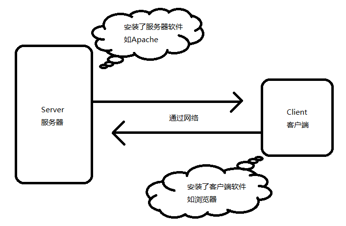

canvas炫酷特效
代码结构
|
|
绘图效果
|
|
页面优化
|
|
一、页面级优化1234567891011121314151617181920212223242526272829303132333435363738394041424344454647484950515253541. 减少HTTP请求数这条策略基本上所有前端人都知道，而且也是最重要最有效的。都说要减少HTTP请求，那请求多了到底会怎么样呢?首先，每个请求都是有成本的，既包含时间成本也包含资源成本。一个完整的请求都需要经过DNS寻址、与服务器建立连接、发送数据、等待服务器响应、接收数据这样一个”漫长”而复杂的过程。时间成本就是用户需要看到或者”感受”到这个资源是必须要等待这个过程结束的，资源上由于每个请求都需要携带数据，因此每个请求都需要占用带宽。另外，由于浏览器进行并发请求的请求数是有上限的(具体参见此处)，因此请求数多了以后，浏览器需要分批进行请求，因此会增加用户的等待时间，会给用户造成站点速度慢这样一个印象，即使可能用户能看到的第一屏的资源都已经请求完了，但是浏览器的进度条会一直存在。减少HTTP请求数的主要途径包括：(1). 从设计实现层面简化页面如果你的页面像百度首页一样简单，那么接下来的规则基本上都用不着了。保持页面简洁、减少资源的使用时最直接的。如果不是这样，你的页面需要华丽的皮肤，则继续阅读下面的内容。 (2). 合理设置HTTP缓存缓存的力量是强大的，恰当的缓存设置可以大大的减少HTTP请求。以有啊首页为例，当浏览器没有缓存的时候访问一共会发出78个请求，共600多K数据(如图1.1)，而当第二次访问即浏览器已缓存之后访问则仅有10个请求，共20多K数据(如图1.2)。(这里需要说明的是，如果直接F5刷新页面的话效果是不一样的，这种情况下请求数还是一样，不过被缓存资源的请求服务器是304响应，只有Header没有Body，可以节省带宽)怎样才算合理设置?原则很简单，能缓存越多越好，能缓存越久越好。例如，很少变化的图片资源可以直接通过HTTP Header中的Expires设置一个很长的过期头;变化不频繁而又可能会变的资源可以使用Last-Modifed来做请求验证。尽可能的让资源能够在缓存中待得更久。关于HTTP缓存的具体设置和原理此处就不再详述了，有兴趣的可以参考下列文章：HTTP1.1协议中关于缓存策略的描述Fiddler HTTP Performance中关于缓存的介绍 (3). 资源合并与压缩如果可以的话，尽可能的将外部的脚本、样式进行合并，多个合为一个。另外，CSS、Javascript、Image都可以用相应的工具进行压缩，压缩后往往能省下不少空间。 (4). CSS Sprites合并CSS图片，减少请求数的又一个好办法。 (5). Inline Images使用data: URL scheme的方式将图片嵌入到页面或CSS中，如果不考虑资源管理上的问题的话，不失为一个好办法。如果是嵌入页面的话换来的是增大了页面的体积，而且无法利用浏览器缓存。使用在CSS中的图片则更为理想一些 (6). Lazy Load Image这条策略实际上并不一定能减少HTTP请求数，但是却能在某些条件下或者页面刚加载时减少HTTP请求数。对于图片而言，在页面刚加载的时候可以只加载第一屏，当用户继续往后滚屏的时候才加载后续的图片。这样一来，假如用户只对第一屏的内容感兴趣时，那剩余的图片请求就都节省了。有啊首页曾经的做法是在加载的时候把第一屏之后的图片地址缓存在Textarea标签中，待用户往下滚屏的时候才”惰性”加载。 2. 将外部脚本置底前文有谈到，浏览器是可以并发请求的，这一特点使得其能够更快的加载资源，然而外链脚本在加载时却会阻塞其他资源，例如在脚本加载完成之前，它后面的图片、样式以及其他脚本都处于阻塞状态，直到脚本加载完成后才会开始加载。如果将脚本放在比较靠前的位置，则会影响整个页面的加载速度从而影响用户体验。解决这一问题的方法有很多，在这里有比较详细的介绍(这里是译文和更详细的例子)，而最简单可依赖的方法就是将脚本尽可能的往后挪，减少对并发下载的影响。 3. 异步执行inline脚本inline脚本对性能的影响与外部脚本相比，是有过之而无不及。首页，与外部脚本一样，inline脚本在执行的时候一样会阻塞并发请求，除此之外，由于浏览器在页面处理方面是单线程的，当inline脚本在页面渲染之前执行时，页面的渲染工作则会被推迟。简而言之，inline脚本在执行的时候，页面处于空白状态。鉴于以上两点原因，建议将执行时间较长的inline脚本异步执行，异步的方式有很多种，例如使用script元素的defer属性(存在兼容性问题和其他一些问题，例如不能使用document.write)、使用setTimeout，此外，在HTML5中引入了Web Workers的机制，恰恰可以解决此类问题 4. Lazy Load Javascript随着JavaScript框架的流行，越来越多的站点也使用起了框架。不过，一个框架往往包括了很多的功能实现，这些功能并不是每一个页面都需要的，如果下载了不需要的脚本则算得上是一种资源浪费-既浪费了带宽又浪费了执行花费的时间。目前的做法大概有两种，一种是为那些流量特别大的页面专门定制一个专用的mini版框架，另一种则是Lazy Load。YUI则使用了第二种方式，在YUI的实现中，最初只加载核心模块，其他模块可以等到需要使用的时候才加载 5. 将CSS放在HEAD中如果将CSS放在其他地方比如BODY中，则浏览器有可能还未下载和解析到CSS就已经开始渲染页面了，这就导致页面由无CSS状态跳转到CSS状态，用户体验比较糟糕。除此之外，有些浏览器会在CSS下载完成后才开始渲染页面，如果CSS放在靠下的位置则会导致浏览器将渲染时间推迟。 6. 异步请求Callback在某些页面中可能存在这样一种需求，需要使用script标签来异步的请求数据。类似：Javascript:/*Callback函数*/ function myCallback(info){ //do something here } HTML:<script type=”text/javascript” src=”http://abc.com/cb”></script> cb返回的内容:myCallback(‘Hello world!’); 像以上这种方式直接在页面上写<script>对页面的性能也是有影响的，即增加了页面首次加载的负担，推迟了DOMLoaded和window.onload事件的触发时机。如果时效性允许的话，可以考虑在DOMLoaded事件触发的时候加载，或者使用setTimeout方式来灵活的控制加载的时机。 7. 减少不必要的HTTP跳转对于以目录形式访问的HTTP链接，很多人都会忽略链接最后是否带’/’，假如你的服务器对此是区别对待的话，那么你也需要注意，这其中很可能隐藏了301跳转，增加了多余请求。具体参见下图，其中第一个链接是以无’/’结尾的方式访问的，于是服务器有了一次跳转。 8. 避免重复的资源请求这种情况主要是由于疏忽或页面由多个模块拼接而成，然后每个模块中请求了同样的资源时，会导致资源的重复请求
二、代码级优化12345678910111213141516171819202122232425262728293031323334353637383940414243444546474849505152535455565758596061626364651. Javascript(1). DOMDOM操作应该是脚本中最耗性能的一类操作，例如增加、修改、删除DOM元素或者对DOM集合进行操作。如果脚本中包含了大量的DOM操作则需要注意以下几点：a. HTML Collection在脚本中document.images、document.forms、getElementsByTagName()返回的都是HTMLCollection类型的集合，在平时使用的时候大多将它作为数组来使用，因为它有length属性，也可以使用索引访问每一个元素。不过在访问性能上则比数组要差很多，原因是这个集合并不是一个静态的结果，它表示的仅仅是一个特定的查询，每次访问该集合时都会重新执行这个查询从而更新查询结果。所谓的”访问集合”包括读取集合的length属性、访问集合中的元素。因此，当你需要遍历HTML Collection的时候，尽量将它转为数组后再访问，以提高性能。即使不转换为数组，也请尽可能少的访问它，例如在遍历的时候可以将length属性、成员保存到局部变量后再使用局部变量。b. Reflow & Repaint除了上面一点之外，DOM操作还需要考虑浏览器的Reflow和Repaint，因为这些都是需要消耗资源的，具体的可以参加以下文章：如何减少浏览器的repaint和reflow?Understanding Internet Explorer Rendering BehaviourNotes on HTML Reflow (2). 慎用with with(obj){ p = 1}; 代码块的行为实际上是修改了代码块中的执行环境，将obj放在了其作用域链的最前端，在with代码块中访问非局部变量是都是先从obj上开始查找，如果没有再依次按作用域链向上查找，因此使用with相当于增加了作用域链长度。而每次查找作用域链都是要消耗时间的，过长的作用域链会导致查找性能下降。因此，除非你能肯定在with代码中只访问obj中的属性，否则慎用with，替代的可以使用局部变量缓存需要访问的属性。 (3). 避免使用eval和Function每次 eval 或 Function 构造函数作用于字符串表示的源代码时，脚本引擎都需要将源代码转换成可执行代码。这是很消耗资源的操作 —— 通常比简单的函数调用慢100倍以上。eval 函数效率特别低，由于事先无法知晓传给 eval 的字符串中的内容，eval在其上下文中解释要处理的代码，也就是说编译器无法优化上下文，因此只能有浏览器在运行时解释代码。这对性能影响很大。Function 构造函数比eval略好，因为使用此代码不会影响周围代码;但其速度仍很慢。此外，使用eval和Function也不利于Javascript压缩工具执行压缩。 (4). 减少作用域链查找前文谈到了作用域链查找问题，这一点在循环中是尤其需要注意的问题。如果在循环中需要访问非本作用域下的变量时请在遍历之前用局部变量缓存该变量，并在遍历结束后再重写那个变量，这一点对全局变量尤其重要，因为全局变量处于作用域链的最顶端，访问时的查找次数是最多的。低效率的写法：//全局变量 var globalVar = 1; function myCallback(info){ for( var i = 100000; i–;){ //每次访问globalVar都需要查找到作用域链最顶端，本例中需要访问100000次 globalVar += i; } } 更高效的写法：//全局变量 var globalVar = 1; function myCallback(info){ //局部变量缓存全局变量 var localVar = globalVar; for( var i = 100000; i–;){ //访问局部变量是最快的 localVar += i; } //本例中只需要访问2次全局变量 globalVar = localVar; }此外，要减少作用域链查找还应该减少闭包的使用。(5). 数据访问Javascript中的数据访问包括直接量(字符串、正则表达式)、变量、对象属性以及数组，其中对直接量和局部变量的访问是最快的，对对象属性以及数组的访问需要更大的开销。当出现以下情况时，建议将数据放入局部变量：a. 对任何对象属性的访问超过1次b. 对任何数组成员的访问次数超过1次另外，还应当尽可能的减少对对象以及数组深度查找。(6). 字符串拼接在Javascript中使用”+”号来拼接字符串效率是比较低的，因为每次运行都会开辟新的内存并生成新的字符串变量，然后将拼接结果赋值给新变量。与之相比更为高效的做法是使用数组的join方法，即将需要拼接的字符串放在数组中最后调用其join方法得到结果。不过由于使用数组也有一定的开销，因此当需要拼接的字符串较多的时候可以考虑用此方法。关于Javascript优化的更详细介绍请参考：Write Efficient Javascript(PPT)Efficient JavaScript2. CSS选择符在大多数人的观念中，都觉得浏览器对CSS选择符的解析式从左往右进行的，例如#toc A { color: #444; } 这样一个选择符，如果是从右往左解析则效率会很高，因为第一个ID选择基本上就把查找的范围限定了，但实际上浏览器对选择符的解析是从右往左进行的。如上面的选择符，浏览器必须遍历查找每一个A标签的祖先节点，效率并不像之前想象的那样高。根据浏览器的这一行为特点，在写选择符的时候需要注意很多事项，有人已经一一列举了，详情参考此处。3. HTML对HTML本身的优化现如今也越来越多的受人关注了，详情可以参见这篇总结性文章。4. Image压缩图片压缩是个技术活，不过现如今这方面的工具也非常多，压缩之后往往能带来不错的效果，具体的压缩原理以及方法在《Even Faster Web Sites》第10章有很详细的介绍，有兴趣的可以去看看。
总结12345678910本文从页面级以及代码级两个粒度对前端优化的各种方式做了一个总结，这些方法基本上都是前端开发人员在开发的过程中可以借鉴和实践的，除此之外，完整的前端优化还应该包括很多其他的途径，例如CDN、Gzip、多域名、无Cookie服务器等等，由于对于开发人员的可操作性并不强大，在此也就不多叙述了，详细的可以参考Yahoo和Google的这些”金科玉律”。1.Javascript简介HTML是纯静态的的页面，而Javascript让页面有了动态的效果，比如;OA中模块的拖拉所有的浏览器都会内置Javascript的解释器1992年 Nombas公司开发出C减减的嵌入式脚本语言。这是最好的HTML页面的脚本语言。Netscape为了扩展其浏览器的功能，开发了一套LiveScript，并与1995年与SUN公司联合把其改名为javascript,它的主要目的是处理一些输入的有效性验证，而之前这个工作是留给perl之类的服务器端语言完成，在以前使用电话线调制解调器(28.8kb/s)的时代，如此慢的与服务器交互，这绝对是一件很痛苦的事情。Javascript的出现，解决了这个问题，因为它的验证是基于客户端的。微软公司早期版本的浏览器仅支持自己的vbscript，但后来不得不加入javascriptIE3中搭载Javascipt的克隆版本，命名为jscript在一次技术会议中，sun，microsoft，netscape公司联合制定了ECMA-Script标准在2005前，网页上提示框，广告越来越多，把javascipt滥用，使javascript背上了大量的罪名。2005年，google公司的网上产品（google地图，gmail，google搜索建议）等使得ajax兴起，而javascript便是ajax最重要的元素之一
Javascript有三个部分组成
- ECMAScript DOM BOM
WEB标准
- 网页主要有三部分组成
- （结构HTML,XHTML，表现CSS，行为DOM，ECMA）
2.ECMA脚本
- Javascript的语法
- 区分大小写
- 弱类型变量 var age=10 var name=”dd”
- 每行结尾的分号可有可无，但建议还是加上
- 注释与java相同
变量
变量是通过var关键字来声明的。（Variable）
变量的命名规则与Java一致
注释有三种：// /**/ <!– –>这个只能注释单行
2.1 javascript的Hello world
document.write()是写在文档的最前面
2.2 slice()、substring()、subtr()
- slice和substring (2,5) 指的是从第3位开始，取（5-2）=3个数，其中slice的参数可以为负
- substr（2,5）指的是从第3为开始，取5个数。但ECMAscript 没有对该方法进行标准化，因此尽量少使用该方法
2.3 indexOf()和lastIndexOf(),isNaN,typeOf123456789101112131415161718192021indexOf（”i”） //从前往后,i在第几位indexOf（”i”,3）可选参数，从第几个字符开始往后找lastIndexOf（”i”） //从后往前,i在第几位lastIndexOf(“i”,3) //从后往前,i在第几位如果没找到，则返回-1String类型的变量，在Java中，用""符号表示字符串，用"表示单个字符。而在javascript中这两种都可以NaN（not a number）Alert(nan ==nan)返回false,因此不推荐使用nan本身，推荐函数isNaNAlert(isNaN(“ab”));//返回truetypeof运算符var stmp = “test”;alert(typeof stmp); //输出'string'alert(typeof 1);//输出'number'此外：还有boolean,undefined,object(如果是引用类型或者null值,null值返回'object'，这其实是ecmascript的一个错误)当声明的变量未初始化的时候，它的值就是undefined.当没有这个变量的时候，typeof 变量返回的值也是undefined。但是没声明的变量是不能参与计算的。当函数无明确返回值时，返回的也是undefinedFunction a(){}Alert(a() == undefined) //返回trueAlert(null == undefined)//返回true
2.4 数值计算1234567var mynum1 = 23.345;var mynum2 = 45;var mynum3 = -34;var mynum4 = 9e5; //科学计数法为 9*10五次方var fNumber = 123.456;alert(fNumber.toExponential(1));//保留的小数点数 1.2e+2alert(fNumber.toExponential(2));//1.23e+2
.5 布尔值1234var married = true;alert(“1.” + typeof(married));//Booleanmarried = “true”;alert(“2.” + typeof(married));//String
.6 类型转换123456789101112131415161718192021转换成string类型有三种方式var a = 3;var b = a + “”;var c = a.toString();var d = “student” + a; toString()var a=11;document.write(a.toString(2) + “<br>”);//转成2进制document.write(a.toString(3) + “<br>”);//转成3进制如果不是数值，则转换报错 parseInt()document.write(parseInt(“1red6″) + “<br>”);//返回1，后面非数值的将全部忽略document.write(parseInt(“53.5″) + “<br>”);//返回53document.write(parseInt(“0xC”) + “<br>”); //直接十进制转换12document.write(parseInt(“isaacshun@gmail.com”) + “<br>”);//NANdocument.write(parseInt(“011″,8) + “<br>”);返回9document.write(parseInt(“011″,10) + “<br>”); //指定为十进制返回11 parseFloat()与parseInt()类似
2.7 数组12345678910111213141516171819202122232425var aMap = new Array(“China”,”USA”,”Britain”);aMap[20] = “Korea”;alert(aMap.length + ” ” + aMap[10] + ” ” + aMap[20]);//"21 undefined Korea" aMap[10]返回undefined document.write(aMap.join(“][") + "<br>"); //用"]["来连接 var sFruit = "apple,pear,peach,orange";var aFruit = sFruit.split(","); var aFruit = ["apple","pear","peach","orange"];alert(aFruit.reverse().toString()); var aFruit = ["orange", "peach", "pear", "apple"];aFruit.sort(); var stack = new Array();stack.push(“red”);stack.push(“green”);stack.push(“blue”);document.write(stack.toString() + “<br>”);var vItem = stack.pop(); // bluedocument.write(vItem + “<br>”);document.write(stack.toString()); // red green
2.8 if语句12345678//首先获取用户的一个输入，并用Number()强制转换为数字var iNumber = Number(prompt(“输入一个5到100之间的数字”, “”));//第二个参数,用于显示输入框的默认值if(isNaN(iNumber)) //判断输入的是否是数字NaN “Not a Number” document.write(“请确认你的输入正确”);else if(iNumber > 100 || iNumber < 5) //判断输入的数字范围 document.write(“你输入的数字范围不在5和100之间”);else document.write(“你输入的数字是:” + iNumber);
2.9 switch1234567891011121314151617181920212223242526iWeek = parseInt(prompt(“输入1到7之间的整数”,””));switch(iWeek){ case 1: document.write(“Monday”); break; case 2: document.write(“Tuesday”); break; case 3: document.write(“Wednesday”); break; case 4: document.write(“Thursday”); break; case 5: document.write(“Friday”); break; case 6: document.write(“Saturday”); break; case 7: document.write(“Sunday”); break; default: document.write(“Error”);}
2.10 while语句1234567var i=iSum=0;while(i<=100){ iSum += i; i++;}alert(iSum);do.while for break continue (与JAVA语法一致)
2.11 函数1234567function ArgsNum(){ return arguments.length;}document.write(ArgsNum('isaac',25) + '<br>');//2document.write(ArgsNum() + '<br>');//0document.write(ArgsNum(3) + '<br>');//1从这个例子可以看出，方法可以没有参数，也可以没有返回值，但是照样可以传入参数和返回值。
2.12 Date对象123456789101112131415161718var myDate1 = new Date(); //运行代码前的时间for(var i=0;i<3000000;i++);var myDate2 = new Date(); //运行代码后的时间document.write(myDate2); var oMyDate = new Date();var iYear = oMyDate.getFullYear();var iMonth = oMyDate.getMonth() + 1; //月份是从0开始的var iDate = oMyDate.getDate();var iDay = oMyDate.getDay(); //0 为星期日 1 为星期一function disDate(oDate, iDate){ var ms = oDate.getTime(); //换成毫秒数 ms -= iDate*24*60*60*1000; //计算相差的毫秒数 return new Date(ms); //返回新的时间对象}var oBeijing = new Date(2008,7,8);var iNum = 100; //前100天var oMyDate = disDate(oBeijing, iNum);
2.13 检测浏览器和操作系统123456789101112131415161718var sUserAgent = navigator.userAgent;//检测Opera、KHTMLvar isOpera = sUserAgent.indexOf(“Opera”) > -1;var isKHTML = sUserAgent.indexOf(“KHTML”) > -1 || sUserAgent.indexOf(“Konqueror”) > -1 || sUserAgent.indexOf(“AppleWebKit”) > -1;//检测IE、Mozillavar isIE = sUserAgent.indexOf(“compatible”) > -1 && sUserAgent.indexOf(“MSIE”) > -1 && !isOpera;var isMoz = sUserAgent.indexOf(“Gecko”) > -1 && !isKHTML;//检测操作系统var isWin = (navigator.platform == “Win32″) || (navigator.platform == “Windows”);var isMac = (navigator.platform == “Mac68K”) || (navigator.platform == “MacPPC”) || (navigator.platform == “Macintosh”);var isUnix = (navigator.platform == “X11″) && !isWin && !isMac;if(isOpera) document.write(“Opera “);if(isKHTML) document.write(“KHTML “);if(isIE) document.write(“IE “);if(isMoz) document.write(“Mozilla “);if(isWin) document.write(“Windows”);if(isMac) document.write(“Mac”);if(isUnix) document.write(“Unix”);
Global对象
其实isNaN，paraseInt等都是Global对象的方法
EncodeURI.因为有效的URI不能包含某些字符，如空格。这个方法就是用于将这个字符转换成UTF-8编码，使浏览器可以接受他们。
Var suil = “www.oseschool.com/pro file/a.html”;
Alert(encodeURI(suil));//www.oseschool.com/pro%20file/a.html
即将空格编码成%20
Eval方法
Eval(“alert(‘hi’)”);
当解析程序发现eval()时，它将把参数解析成真正的ECMA-script语句，然后插入该语句所在位置。
Global除了有内置方法外，还有很多内置的属性：如：undefined,NaN,Array,String,Number，Date，RegExp等
Math对象
Max方法，min方法,ceil,floor,round,sqrt,random
Max(1,2,3);min(1.2,3.4);
想取到1~10的数据
Math.floor(Math.random()*10+1)
2~9的数据
Math.floor(Math.random()*9+2);
3.1 getElementsByTagName12345678910111213141516171819202122function searchDOM(){ //放在函数内，页面加载完成后才用<body>的onload加载，这时如果把alert这句改成用document.write则会把原内容覆盖掉，因为是后面才执行的 var oLi = document.getElementsByTagName(“li”); //输出长度、标签名称以及某项的文本节点值 alert(oLi.length + ” ” +oLi[0].tagName + ” ” + oLi[3].childNodes[0].nodeValue); var oUl = document.getElementsByTagName(“ul”); var oLi2 = oUl[1].getElementsByTagName(“li”); alert(oLi2.length + ” ” +oLi2[0].tagName + ” ” + oLi2[1].childNodes[0].nodeValue);}<body onload=”searchDOM()”> <ul>客户端语言 <li>HTML</li> <li>JavaScript</li> <li id=”cssLi”>CSS</li> </ul><ul>服务器端语言 <li>ASP.NET</li> <li>JSP</li> <li>PHP</li></ul></body>
3.2 getElementById1234var oLi = document.getElementById(“cssLi”);oLi.style .backgroundColor=”yellow” //输出标签名称以及文本节点值 alert(oLi.tagName + ” ” + oLi.childNodes[0].nodeValue);
3.2 getElementsByName
alert(document.getElementsByName(“a”).length);
3.3 访问子节点
|
|
4访问父节点123456789101112131415161718192021222324252627282930313233343536nodeName如果为文本节点，则返回#texttagName如果为文本节点，则返回undefined function myDOMInspector(){ var myItem = document.getElementById(“myDearFood”); alert(myItem.parentNode.tagName);} function myDOMInspector(){ var myItem = document.getElementById(“myDearFood”); var parentElm = myItem.parentNode; while(parentElm.className != “colorful” && parentElm != document.body) parentElm = parentElm.parentNode; //一路往上找 alert(parentElm.tagName);}<body onload=”myDOMInspector()”><div class=”colorful”><ul> <li>糖醋排骨</li> <li>圆笼粉蒸肉</li> <li>泡菜鱼</li> <li id=”myDearFood”>板栗烧鸡</li> <li>麻婆豆腐</li> </ul></div></body>访问兄弟节点function myDOMInspector(){ var myItem = document.getElementById(“myDearFood”); //访问兄弟节点 var nextListItem = myItem.nextSibling; var preListItem = myItem.previousSibling; alert(nextListItem.tagName +” “+ preListItem.tagName);} 在Firefox中不支持，但是IE中却是支持的。
3.6 第一个最后一个子节点12345678910111213141516171819202122232425262728293031function nextSib(node){ var tempLast = node.parentNode.lastChild; //判断是否是最后一个节点，如果是则返回null if(node == tempLast) return null; var tempObj = node.nextSibling; //逐一搜索后面的兄弟节点，直到发现元素节点为止 while(tempObj.nodeType!=1 && tempObj.nextSibling!=null) tempObj = tempObj.nextSibling; //三目运算符，如果是元素节点则返回节点本身，否则返回null return (tempObj.nodeType==1)?tempObj:null;}function prevSib(node){ var tempFirst = node.parentNode.firstChild; //判断是否是第一个节点，如果是则返回null if(node == tempFirst) return null; var tempObj = node.previousSibling; //逐一搜索前面的兄弟节点，直到发现元素节点为止 while(tempObj.nodeType!=1 && tempObj.previousSibling!=null) tempObj = tempObj.previousSibling; return (tempObj.nodeType==1)?tempObj:null;}function myDOMInspector(){ var myItem = document.getElementById(“myDearFood”); //获取后一个元素兄弟节点 var nextListItem = nextSib(myItem); //获取前一个元素兄弟节点 var preListItem = prevSib(myItem); alert(“后一项:” + ((nextListItem!=null)?nextListItem.firstChild.nodeValue:null) + ” 前一项:” + ((preListItem!=null)?preListItem.firstChild.nodeValue:null) );}
|
|
3.7 getAttribute setAttribute1234567891011121314function myDOMInspector(){ //获取图片 var myImg = document.getElementsByTagName(“img”)[0]; //获取图片title属性 alert(myImg.getAttribute(“title”));} function changePic(){ //获取图片 var myImg = document.getElementsByTagName(“img”)[0]; //设置图片src和title属性 myImg.setAttribute(“src”,”02.jpg”); myImg.setAttribute(“title”,”紫荆公寓”);}
3.8创建新节点
123456789function createP(){ var op = document.createElement(“p”); var otext = document.createTextNode(“HHHHH”); op.appendChild(otext); op.setAttribute(“style”,”text-align:center”); document.body.appendChild(op); //创建完节点，就马上会影响到下面的操作，比如P的数量就会多1个}
3.9删除节点12345678910111213141516需要注意的是标签之间的父子关系！！！function deleteP(){ var oP = document.getElementsByTagName(“p”)[0]; oP.parentNode.removeChild(oP); //删除节点} ``` 3.10替换节点```jsfunction replaceP(){ var oOldP = document.getElementsByTagName(“p”)[0]; var oNewP = document.createElement(“p”); //新建节点 var oText = document.createTextNode(“这是一个感人肺腑的故事”); oNewP.appendChild(oText); oOldP.parentNode.replaceChild(oNewP,oOldP); //替换节点}
3.11插入节点
1234567891011121314151617181920212223242526272829303132333435function insertP(){ var oOldP = document.getElementsByTagName(“p”)[0]; var oNewP = document.createElement(“p”); //新建节点 var oText = document.createTextNode(“这是一个感人肺腑的故事”); oNewP.appendChild(oText); oOldP.parentNode.insertBefore(oNewP,oOldP); //插入节点} 没有insertAfter，但是可以自己写一个 function insertAfter(newElement, targetElement){ var oParent = targetElement.parentNode; //首先找到目标元素的父元素 if(oParent.lastChild == targetElement) //如果目标元素已经是最后一个子元素了 oParent.appendChild(newElement); //则直接用appendChild()加到子元素列表的最后 else //否则用insertBefore()插入到目标元素的下一个兄弟元素之前 oParent.insertBefore(newElement,targetElement.nextSibling);}function insertP(){ var oOldP = document.getElementById(“myTarget”); var oNewP = document.createElement(“p”); //新建节点 var oText = document.createTextNode(“这是一个感人肺腑的故事”); oNewP.appendChild(oText); insertAfter(oNewP,oOldP); //插入节点} 其实这个也是通过insertBefore原理来实现的``` 3.12 cloneNode(deepBoolean)```js复制并返回当前节点的复制节点，这个复制得到的节点是一个孤立的节点，不在document树中。复制原来节点的属性值，包括ID属性，所以在把这个新节点加到document之前，一定要修改ID属性，以便使它保持唯一。当然如果ID的唯一性不重要可以不做处理。这个方法支持一个布尔参数，当deepBoolean设置true时，复制当前节点的所有子节点，包括该节点内的文本。<p id=”mypara”>11111</p>p=document.getElementById(“mypara”)pclone = p.cloneNode(true);p.parentNode.appendChild(pclone
3.12文档碎片
1234567891011function insertPs(){ var aColors = ["red","green","blue","magenta","yellow","chocolate","black","aquamarine","lime","fuchsia","brass","azure","brown","bronze","deeppink","aliceblue","gray","copper","coral","feldspar","orange","orchid","pink","plum","quartz","purple"]; var oFragment = document.createDocumentFragment(); //创建文档碎片 for(var i=0;i<aColors.length;i++){ var oP = document.createElement(“p”); var oText = document.createTextNode(aColors[i]); oP.appendChild(oText); oFragment.appendChild(oP); //将节点先添加到碎片中 } document.body.appendChild(oFragment); //最后一次性添加到页面}
3.13 innerHTML12345678function myDOMInnerHTML(){ var myDiv = document.getElementById(“myTest”); alert(myDiv.innerHTML); //直接显示innerHTML的内容 //修改innerHTML，可直接添加代码 myDiv.innerHTML = “<img src=’01.jpg’ title=’情人坡’>”;} innerHTML可同时显示没有的代码
3.14 换皮肤
1234567891011121314151617181920212223242526<style type=”text/css”>.myUL1{ color:#0000FF; font-family:Arial; font-weight:bold;}.myUL2{ color:#FF0000; font-family:Georgia, “Times New Roman”, Times, serif;}</style><script language=”javascript”>function check(){ var oMy = document.getElementsByTagName(“ul”)[0]; oMy.className =(oMy.className==”myUL1″? “myUL2″:”myUL1″); //修改CSS类}</script></head> <body> <ul onclick=”check()” class=”myUL1″> <li>HTML</li> <li>JavaScript</li> <li>CSS</li> </ul></body>
4.表格与表单
4.1 动态添加行
123456789101112131415161718192021222324<script language=”javascript”>window.onload=function(){var oTr = document.getElementById(“member”).insertRow(2); //插入一行var aText = new Array();aText[0] = document.createTextNode(“fresheggs”);aText[1] = document.createTextNode(“W610″);aText[2] = document.createTextNode(“Nov 5th”);aText[3] = document.createTextNode(“Scorpio”);aText[4] = document.createTextNode(“1038818″);for(var i=0;i<aText.length;i++){var oTd = oTr.insertCell(i);oTd.appendChild(aText[i]);}}</script>```- 4.2修改单元格内容```js<script language=”javascript”>window.onload=function(){var oTable = document.getElementById(“member”);oTable.rows[3].cells[4].innerHTML = “lost”; //修改单元格内容}</script>4.3 动态删除
123456789101112131415161718192021222324252627282930313233343536373839404142parentElement是IE dom，parentNode是标准DOM<script language=”javascript”>window.onload=function(){var oTable = document.getElementById(“member”);oTable.deleteRow(2); //删除一行，后面的行号自动补齐//指从table中的第2行开始进行删除oTable.rows[2].deleteCell(1); //删除一个单元格，后面的也自动补齐}</script><script language=”javascript”>function myDelete(){var oTable = document.getElementById(“member”);//删除该行this.parentNode.parentNode.parentNode.removeChild(this.parentNode.parentNode);}window.onload=function(){var oTable = document.getElementById(“member”);var oTd;//动态添加delete链接for(var i=1;i<oTable.rows.length;i++){oTd = oTable.rows[i].insertCell(5);oTd.innerHTML = “<a href=’#’>delete</a>”;oTd.firstChild.onclick = myDelete; //添加删除事件}}</script>```4.4动态删除列```js<script language=”javascript”>function deleteColumn(oTable,iNum){//自定义删除列函数，即每行删除相应单元格for(var i=0;i<oTable.rows.length;i++)oTable.rows[i].deleteCell(iNum);}window.onload=function(){var oTable = document.getElementById(“member”);deleteColumn(oTable,2);}</script>
4.5 控制textarea的字符个数123456<script language=”javascript”>function LessThan(oTextArea){ //返回文本框字符个数是否符号要求的boolean值 return oTextArea.value.length < oTextArea.getAttribute(“maxlength”);}</script>
5.BOM模型1234567891011121314151617181920212223242526272829303132333435363738394041424344浏览器对象模型，可以对浏览器窗口进行访问和操作，使用BOM,开发者可以移动窗口，改变状态栏中的文本等与页面内容不相关的操作Window对象这里可以用window.frames[0]或者用windows.frames["topFrame"]来引用框架，也可以用topl来代替window属性。Top.frames[0] 。window对象可以忽略 提供的方法有moveto,moveBy,resizeTo,resizeBy等方法。但尽量避免使用它们，因为会对用户浏览产生影响 Open方法 除了open方法，还有alert,comfirm,prompt方法 状态栏 Settimeout与setIntervalSettimeout下面的代码都是在1秒钟后显示一条警告Settimeout(“alert(‘aa’),1000″);Settimeout(function(){alert(‘aa’);},1000); 如果要还未执行的暂停，可调用clearTimeOut()方法Var si = Settimeout(function(){alert(‘aa’);},1000);clearTimeout(si); setInterval History向后一页window.history.Go(-1); 等于history.back();向前一页window.history.go(1); 等于 history.forword(); Document LastModified,title,URL属性都是比较常用 Location对象Navigator对象Screen对象
6.事件
6.1 冒泡型事件
123456789101112131415<script language=”javascript”>function add(sText){ var oDiv = document.getElementById(“display”); oDiv.innerHTML += sText; //输出点击顺序}</script></head><body onclick=”add(‘body<br>’);”> <div onclick=”add(‘div<br>’);”> <p onclick=”add(‘p<br>’);”>Click Me</p> </div> <div id=”display”></div></body> 先执行最里面的p，再往外执行
6.2 监听函数123456789101112131415161718192021222324252627282930313233343536373839404142434445464748495051525354555657585960616263646566676869707172<script language=”javascript”>window.onload = function(){ var oP = document.getElementById(“myP”); //找到对象 oP.onclick = function(){ //设置事件监听函数 alert(‘我被点击了’); }}</script></head> <body> <div> <p id=”myP”>Click Me</p> </div></body> Function a(){}oP.onclick = a这样会先把a函数加载到缓存，不是最佳方案Var A = Function(){}oP.onclick = a这样只有在onclick事件发生的时候，加载该函数 若以上的监听函数，在onclick的时候，需要执行多个函数，那就只能用以下的方法： IE标准： <script language=”javascript”>function fnClick(){ alert(“我被点击了”); oP.detachEvent(“onclick”,fnClick); //点击了一次后删除监听函数}var oP;//声明在函数外，这样就可以两个函数一起使用window.onload = function(){ oP = document.getElementById(“myP”); //找到对象 oP.attachEvent(“onclick”,fnClick); //添加监听函数}</script></head> <body> <div> <p id=”myP”>Click Me</p> </div></body> 也可以添加多个监听器oP.attachEvent(“onclick”,fnClick1); //添加监听函数1 oP.attachEvent(“onclick”,fnClick2); //添加监听函数2 执行顺序为fnClick2-> fnClick1但是以上的监听器均为IE中的标准，而符合标准DOM（firefox）的监听器如下 oP.addEventListener(“click”,fnClick1,false); //添加监听函数1 oP.addEventListener(“click”,fnClick2,false); //添加监听函数2 因此这种方式在Firefox中支持，而在IE中不支持 为了兼容性，可这样写 if (el.addEventListener)…{el.addEventListener(‘click’, KindDisableMenu, false);} else if (el.attachEvent)…{ el.attachEvent(‘onclick’, KindDisableMenu);} 第三个参数为useCapture 而useCapture這個參數就是在控制這時候兩個click事件的先後順序。如果是false，那就會使用bubbling，他是從內而外的流程，所以會先執行藍色元素的click事件再執行紅色元素的click事件，如果是true，那就是capture，和bubbling相反是由外而內
6.3 事件的类型event.type12345678910111213141516171819202122232425262728293031323334353637383940IE浏览器中事件对象是window对象的一个属性eventOp.onlick=function(){ var o = window.event}而标准DOM中规定event对象必须作为唯一的参数传给事件处理函数Op.onclick=function(oevent){}因此为了兼容两种浏览器，通常采用下面的方法Op.onclick=function(o){If(window.event)//假如不等于空，则为IE浏览器 O = window.event;} <script language=”javascript”>function handle(oEvent){ var oDiv = document.getElementById(“display”); if(window.event) oEvent = window.event; //处理兼容性，获得事件对象 if(oEvent.type == “click”) //检测事件名称 oDiv.innerHTML += “你点击了我  ”; else if( oEvent.type == “mouseover”) oDiv.innerHTML += “你移动到我上方了  ”; }window.onload = function(){ var oImg = document.getElementsByTagName(“img”)[0]; oImg.onclick = handle; oImg.onmouseover = handle;}</script> 还有很多鼠标事件 window.onload = function(){ var oImg = document.getElementsByTagName(“img”)[0]; oImg.onmousedown = handle; //将鼠标事件除了mousemove外都监听 oImg.onmouseup = handle; oImg.onmouseover = handle; oImg.onmouseout = handle; oImg.onclick = handle; oImg.ondblclick = handle;}
6.4 事件的激活元素event.srcElement 或者 target
123456789101112131415161718192021222324252627282930313233343536373839404142434445464748495051525354555657585960616263646566676869707172737475767778798081828384858687<script language=”javascript”>function handle(oEvent){ if(window.event) oEvent = window.event; //处理兼容性，获得事件对象 var oTarget; if(oEvent.srcElement) //处理兼容性，获取事件目标 oTarget = oEvent.srcElement; //IE支持的写法 else oTarget = oEvent.target; //Firefox支持的写法 alert(oTarget.tagName); //弹出目标的标记名称 }window.onload = function(){ var oImg = document.getElementsByTagName(“img”)[0]; oImg.onclick = handle;}</script>event.button<script language=”javascript”>function TestClick(oEvent){ var oDiv = document.getElementById(“display”); if(window.event) oEvent = window.event; oDiv.innerHTML += oEvent.button; //输出button的值}document.onmousedown = TestClick;window.onload = TestClick; //测试未按下任何键</script></head> <body><div id=”display”></div></body> 在IE/Opera中，是window.event，而在Firefox中，是event而事件的对象，在IE中是window.event.srcElement，在Firefox中是event.target，而在Opera中则两者都支持。 在 IE 里面左键是window.event.button=1右键是window.event.button=2中键是window.event.button=4没有按键动作的时候window.event.button=0在 Firefox 里面左键是event.button=0右键是event.button=2中键是event.button=1没有按键动作的时候event.button=0在 Opera 7.23/7.54 里面鼠标左键是window.event.button=1没有按键动作的时候window.event.button=1右键和中键无法获取键盘事件window.onload = function(){ var oTextArea = document.getElementsByTagName(“textarea”)[0]; oTextArea.onkeydown = handle; //监听所有键盘事件 oTextArea.onkeyup = handle; oTextArea.onkeypress = handle;} e.keyCode; onkeypress是在用户按下并放开任何字母数字键时发生。系统按钮（例如，箭头键和功能键, Shift、Ctrl、Alt、F1、F2）无法得到识别。onkeyup 是在用户放开任何先前按下的键盘键时发生。onkeydown 是在用户按下任何键盘键（包括系统按钮，如箭头键和功能键）时发生屏蔽鼠标右键第一种方式：<script language=”javascript”>function block(oEvent){ if(window.event) oEvent = window.event; if(oEvent.button == 2) alert(“鼠标右键不可用”);}document.onmousedown = block;</script> 第二种方式：<script language=”javascript”>function block(oEvent){ if(window.event){ oEvent = window.event; oEvent.returnValue = false; //取消默认事件支持IE }else oEvent.preventDefault(); //取消默认事件支持Firefox}document.oncontextmenu = block;</script>
6.8伸缩的菜单1234567891011121314151617181920212223242526272829303132333435363738394041424344454647484950515253545556575859606162636465666768697071727374757677787980818283848586878889<script language=”javascript”>function change(){ //通过父元素li，找到兄弟元素ul var oSecondDiv = this.parentNode.getElementsByTagName(“ul”)[0];//这里的this就是下面的OA //CSS交替更换来实现显、隐 if(oSecondDiv.className == “myHide”) oSecondDiv.className = “myShow”; else oSecondDiv.className = “myHide”;}window.onload = function(){ var oUl = document.getElementById(“listUL”); var aLi = oUl.childNodes; //子元素 var oA; for(var i=0;i<aLi.length;i++){ //如果子元素为li，且这个li有子菜单ul if(aLi[i].tagName == “LI”&& aLi[i].getElementsByTagName(“ul”).length){ oA = aLi[i].firstChild; //找到超链接 oA.onclick = change; //动态添加点击函数 } }}</script> tagName出来的都是大写总结《Event详解》DOM常用属性tagNamenodeValuenodeNamenodeTypeparentNodechildNodesfirstChildlastChildnextSibling (IE)previousSibling (IE)attributesinnerHTMLstyleclassName 方法getElementByIdgetElementsByNamegetElementsByTagNamehasChildNodes()getAttributesetAttributecreateElementcreateTextNodeappendChildremoveChildreplaceChildinsertBeforecloneNodecreateDocumentFragmentdetachEventattachEvent（IE) addEventListener(DOM) event属性typekeyCodesrcElement(IE) target(DOM)button 鼠标事件onclickonmouseoveronmousedownonmouseuponmouseoutondblclick 键盘事件onkeydownonkeyuponkeypress window事件onload document事件oncontextmenuwriteonmousedown
7.JavaScipt优化和调试123456789101112131415161718192021222324252627282930313233343536373839404142434445464748495051525354555657585960616263646566676869707172737475767778798081828384858687888990919293949596979899100101102103104105106107108109110111112113114115116117118119120121122123124125126127128129130131132133134135136137138139140141142143144145146147148149150151152153154155156157158159160161162163164165166167168169170171172173174175176177178179180181182183184185186187188189190191192193194195196197198199200201202203204205206207208209210211212213214215216217218219220221222223224225226227228229230231232233234235236237238239240241242243244245246247248249250251252253254255256257258259260261262263264265266267268269270271272273274275276277278279280281282283284285286287288289290291292293294295296297298299300301302303304305306307308309310311312313314315316317318319320321322323324325326327328329330331332333334335336337338339340341342343344345346347348349350351352353354355356357358359360361362363364365366367368369370371372373374375376377378379380381382383384385386387388389390391392393394395396397398399400401402403404405406407408409410411412413414415416417418419420421422423424425426427428429430431432433434435436437438439440441442443444445446447448449450451452453454455456457458459460461462463464465466467468469470471472473474475476477478479480481482483484485486487488489490491492493494495496497498499500501502503504505506507508509510511512513514515516517518519520521522523524525526527528529530531532533534535536537538539540541542543544545546547548549550551552553554555556557558559560561562563564565566567568569570571572573574575576577578579580581582583584585586587588589590591592593594595596597598599600601602603604605606607608609610611612613614615616617618619620621622623624625626627628629630631632633634635636637638639640641642643644645646647648649650651652653654655656657658659660661662663664665666667668669670671672673674675676677678679680681682683684685686687688689690691692693694695696697698699700701702703704705706707708709710711712713714715716717718719720721722723724725726727728729730731732733734735736737738739740741742743744745746747748749750751752753754755756757758759760761762763764765766767768769770771772773774775776777778779780781782783784785786787788789790791792793794795796797798799800801802803804805806807808809810811812813814815816817818819820821822823824825826827828829830831832833834835836837838839840841842843844845846847848849850851852853854855856857858859860861862863864865866867868869870871872873874875876877878879880881882883884885886887888889890891892893894895896897898899900901902903904905906907908909910911912913914915916917918919920921922923924925926927928929930931932933934935936937938939940941942943944945946947948949950951952953954955956957958959960961962963964965966967968969970971972973974975976977978979980981982983984985986987988989990991992993994995996997998999100010011002100310041005100610071008100910101011101210131014101510161017101810191020102110221023102410251026102710281029103010311032103310341035103610371038103910401041104210431044104510461047104810491050105110521053105410551056105710581059106010611062106310641065106610671068106910701071107210731074107510761077107810791080108110821083108410851086108710881089109010911092109310941095109610971098109911001101110211031104110511061107110811091110111111121113111411151116111711181119112011211122112311241125112611271128112911301131113211331134113511361137113811391140114111421143114411451146114711481149115011511152115311541155115611571158115911601161116211631164116511661167116811691170117111721173117411751176117711781179118011811182118311841185118611871188118911901191119211931194119511961197119811991200120112021203120412051206120712081209121012111212121312141215121612171218121912201221122212231224122512261227122812291230123112321233123412351236123712381239124012411242124312441245124612471248124912501251125212531254125512561257125812591260126112621263126412651266126712681269127012711272127312741275127612771278127912801281128212831284128512861287128812891290129112921293129412951296129712981299130013011302130313041305130613071308130913101311131213131314131513161317131813191320132113221323132413251326132713281329133013311332133313341335133613371338133913401341134213431344134513461347134813491350135113521353135413551356135713581359136013611362136313641365136613671368136913701371137213731374137513761377137813791380138113821383138413851386138713881389139013911392139313941395139613971398139914001401140214031404140514061407140814091410141114121413141414151416141714181419142014211422142314241425142614271428142914301431143214331434143514361437143814397.1 错误和异常拼写错误、访问不存在的变量，括号不匹配，等号与赋值 声明变量时，要记住局部变量和全局变量的区别 Function square(num){ Total = num*num;Return total;}Var total = 50;Var number = Square(20);Alert(total); 这些代码将不可避免地导致全局变量total的值发生变化。Function square(num){ Var Total = num*num;Return total;}7.2 错误处理 onerror<head><title>onerror</title><script language=”javascript”>window.onerror = function(){ alert(“出错啦！”); return true; //屏蔽系统事件}</script></head><body onload=”nonExistent()”></body> Try..catch<script language=”javascript”>try{ alert(“this is an example”); alert(fresheggs);} catch(exception){ var sError = “”; for(var i in exception) sError += i + “:” + exception[i] + “\n”; alert(sError);}</script>7.3 调试器IE-工具-Intenet选项-高级->禁用调试，显示脚本错误 Firefox错误控制台Microsoft script debuggerVenkman firefox的插件 ```js6.4 JavaScript优化```js1.提高JavaScript下载时间。将JavaScript写到同一行2.尽量使用内置函数（因为内置函数是通过C语言编译到浏览器中的）.实例1 图片查看器<html><head> <title></title> <script> function showPic(obj){ var h = obj.getAttribute(“href”); document.getElementById(“image”).setAttribute(“src”,h); } </script></head><body><h1>Snapshots</h1><ul> <li><a href=”photo/01.jpg” title=”a” onclick=”showPic(this);return false;“>01</a></li> <li><a href=”photo/02.jpg” title=”b” onclick=”showPic(this);return false;”>02</a></li> <li><a href=”photo/03.jpg” title=”c” onclick=”showPic(this);return false;”>03</a></li> <li><a href=”photo/04.jpg” title=”d” onclick=”showPic(this);return false;”>04</a></li> <li><a href=”photo/05.jpg” title=”e” onclick=”showPic(this);return false;”>05</a></li></ul><img id=”image” src=”photo/01.jpg” alt=”my image”></img></body></html>Return false指的是把默认的noclick事件取消给其加上css<style> body{ color:#333; background:#ccc; margin:1em 10%; } a{ text-decoration:none; padding:10px; color:#c60; } a:link, a:visited{ color: #A62020; background-color: #ecd8db; text-decoration: none; padding:4px 10px 4px 10px; border-top:1px solid #EEE; border-left:1px solid #EEE; border-bottom:1px solid #717171; border-right:1px solid #717171; } a:hover{ color:#821818; background-color:#e2c4c9; padding:5px 8px 3px 12px; border-top:1px solid #717171; border-left:1px solid #717171; border-bottom:1px solid #EEE; border-right:1px solid #EEE;} ul{ margin:0px; padding:0px; } li{ list-style-type:none; display:inline; } img{ margin:10px 0px; } </style>当时现在有个缺陷，就是onclick的事件直接写在了HTML上，分离先给ul加上个属性id<ul id=”img_ul”>window.onload = prepareGalley; function prepareGalley(){ var img_ul = document.getElementById(“img_ul”); var links = img_ul.getElementsByTagName(“a”); for(var i=0;i<links.length;i++){ links[i].onclick = function(){ showPic(this); return false; } } } 有一个问题，如果onload的函数有多个怎么办？window.onload = prepareGalley1;window.onload = prepareGalley2;显然，这样第一个函数就会被第二个函数覆盖。 可以这样写 Window.onload = function(){ prepareGalley1(); prepareGalley2();} 还有一个比这个更NB的写法，由Simon Willison写的function addLoadEvent(func){ var oldonload = window.onload; if(typeof window.onload !=’function’){ window.onload = func; }else{ window.onload = function(){ oldonload(); func(); } } } addLoadEvent(prepareGalley1); addLoadEvent(prepareGalley2); 编写一个方法求一个字符串的字节长度new function(s){ if(!arguments.length||!s) return null; if(“”==s) return 0; var l=0; for(var i=0;i<s.length;i++){ if(s.charCodeAt(i)>255) l+=2; else l++; } alert(l);}(“hello world!”); 如何控制alert中的换行alert(“hello\nworld”); 解释document.getElementById(“ElementID”).style.fontSize=”1.5em”设置id为ElementID的元素的字体大小为1.5个相对单位Em为相对长度单位。相对于当前对象内文本的字体尺寸。如当前对行内文本的字体尺寸未被人为设置，则相对于浏览器的默认字体尺寸。 1em=16px 按照格式 xxxx年xx月xx日xx时xx分xx秒动态显示时间要求不足10的补0<script type=”text/javascript” language=”javascript”> function tick(){var d=new Date();var t=function(a){return a<10?”0″+a:a;}Clock.innerHTML=d.getFullYear()+”年”+t(d.getMonth()+1)+”月”+t(d.getDate())+”日”+t(d.getHours())+”时”+t(d.getMinutes())+”分”+t(d.getSeconds())+”秒”;window.setTimeout(“tick()”,1000);}window.onload=tick;</script> <body><div id=”Clock”></div></body> 编写一个方法去掉一个数组的重复元素 Array.prototype.strip=function(){ if(this.length<2) return [this[0]]||[]; var arr=[]; for(var i=0;i<this.length;i++){ arr.push(this.splice(i–,1));//将本数组中第一个元素取出放入到数组arr中 for(var j=0;j<this.length;j++){ if(this[j]==arr[arr.length-1]){ this.splice(j–,1);//删除本数组中与数组arr中最后一个元素相同的元素} } }return arr;} var arr=["abc",85,"abc",85,8,8,1,2,5,4,7,8];alert(arr.strip()); 说出3条以上ff和ie的脚本兼容问题IE有children，FF没有；IE有parentElement，FF没有；IE有 innerText,outerText,outerHTML，FF没有；IE有数据岛，FF没有；FF有HTMLElement,HTMLDivElement,XMLDocument,DocumentFragment,Node,Event,Element 等等，IE没有；IE跟FF创建HttpRequest实例的方法不一样 DIV中border、margin和padding的区别和用法边框属性(border)用来设定一个元素的边线外边距属性(margin)是用来设置一个元素所占空间的边缘到相邻元素之间的距离内边距属性(padding)是用来设置元素内容到元素边界的距离 为Array写一个indexof方法Array.prototype.indexOf = function(e){for(var i=0,j; j=this[i]; i++){if(j==e){return i;}}return -1;} Array.prototype.lastIndexOf = function(e){for(var i=this.length-1,j; j=this[i]; i–){if(j==e){return i;}}return -1;} var arr=[1,2,3,4,5];alert(arr.indexOf(5)); 克隆浅复制(影子克隆):只复制对象的基本类型,对象类型,仍属于原来的引用深复制(深度克隆):不紧复制对象的基本类,同时也复制原对象中的对象.就是说完全是新对象产生的 Object.prototype.Clone = function(){ var objClone; if( this.constructor == Object )objClone = new this.constructor(); elseobjClone = new this.constructor(this.valueOf()); for ( var key in this ){ if ( objClone[key] != this[key] ){ if ( typeof(this[key]) == ‘object’ ){ objClone[key] = this[key].Clone(); }else{ objClone[key] = this[key]; } } } objClone.toString = this.toString; objClone.valueOf = this.valueOf; return objClone; } 兼容 IE 和 FF 的换行 CSS 推荐样式word-wrap:break-word; overflow:hidden; word-wrap是控制换行的。使用break-word时，是将强制换行。中文没有任何问题，英文语句也没问题。但是对于长串的英文，就不起作用。 word-break是控制是否断词的。normal是默认情况，英文单词不被拆开。break-all，是断开单词。在单词到边界时，下个字母自动到下一行。主要解决了长串英文的问题。keep-all，是指Chinese, Japanese, and Korean不断词。即只用此时，不用word-wrap，中文就不会换行了。（英文语句正常。） 手型Cursor的兼容IE和FF写法cursor:pointer <img>元素的alt和title有什么异同？alt作为图片的替代文字出现，title是图片的解释文字 图片存在只有alt 图片的解释文字只有title 图片的解释文字两者都有图片的解释文字两者都没有图片既没有替代文字，也没有解释文字 图片不存在只有alt 图片既有替代文字，又有解释文字只有title 图片没有替代文字，只有解释文字两者都有图片既有替代文字，又有解释文字两者都没有图片既没有替代文字，也没有解释文字 当然不同的浏览器处理方式也会不一样 border-color-left、marin-left、-moz-viewport改写成JavaScript格式border-color-left:borderLeftColormarin-left:marinLeft-moz-viewport:MozViewport 用css、html编写一个两列布局的网页，要求右侧宽度为200px，左侧自动扩展。CSS:#right{ float:right; width:200px;}#left{ marin-right:200px;}HTML:<body> <div id=”right”>…</div> <div id=”left”>…</div></body> Linux题目：批量删除当前目录下后缀名为.c的文件，如a.c、b.crm *.c 如何提高网页的运行速度内容与形式分离，模块化开发，优化CSS减少页面文档大小尽量减少图片的使用或注意图片的大小，优化图片：格式、质量、图片长宽标志减少响应的次数，用Ajax网址后面加一个”/” 按要求写一个简单的ajax示例<body><div id=”load”>数据正在加载……</div><script type=”text/javascript”>var Browser={/**Browser对象用于检测浏览器，其中用到了IE的条件编译*/isFF:window.navigator.appName.toUpperCase().indexOf(“NETSCAPE”)!=-1?true:false, isOpera:window.navigator.appName.toUpperCase().indexOf(“OPERA”)!=-1?true:false}; Function.prototype.bind=function(object){ var _this=this; return function(){ _this.apply(object,arguments); }} function HttpRequest(){ this.async=true; this.cache=false; this.xmlhttp=function(){ if(Browser.isFF&&window.XMLHttpRequest){ try{ return new XMLHttpRequest();}catch(e){} }else if(Browser.isIE&&window.ActiveXObject){ var Version = ["Msxml2.XMLHTTP.6.0","Msxml2.XMLHTTP.5.0","Msxml2.XMLHTTP.4.0","Msxml2.XMLHTTP.3.0",+"Msxml2.XMLHTTP.2.6","Msxml2.XMLHTTP","Microsoft.XMLHTTP.1.0","Microsoft.XMLHTTP.1","Microsoft.XMLHTTP"]; for(var i=0;i<Version.length;i++){ try{ return new ActiveXObject(Version[i]); }catch(e){} } } }()||false;}HttpRequest.prototype={send:function(object,url,callback){ if(!this.xmlhttp) return; this.xmlhttp.open(object?”post”:”get”,url,!!this.async);if(object) this.xmlhttp.setRequestHeader(“content-type”,”application/x-www-form-urlencoded”); if(!this.cache){ this.xmlhttp.setRequestHeader(“No-Cache”,”1″); this.xmlhttp.setRequestHeader(“Pragma”,”no-cache”); this.xmlhttp.setRequestHeader(“Cache-Control”,”no-cache”);this.xmlhttp.setRequestHeader(“Expire”,”0″); this.xmlhttp.setRequestHeader(“Last-Modified”,”Wed, 1 Jan 1997 00:00:00 GMT”); this.xmlhttp.setRequestHeader(“If-Modified-Since”,”-1″);} if(!this.callback) this.callback=callback; if(!this.async){ if(typeof(this.callback)==”string”){ eval(this.callback); }else if(typeof(this.callback)==”function”){ this.callback(this.xmlhttp);} }else{ this.xmlhttp.onreadystatechange=function(){ if(this.xmlhttp.readyState==4){ if(this.xmlhttp.status==0||this.xmlhttp.status==200){ if(typeof(this.callback)==”string”){ eval(this.callback); }elseif(typeof(this.callback)==”function”){ this.callback(this.xmlhttp); } } } }.bind(this); } this.xmlhttp.send(object); },abort:function(){ if(this.xmlhttp&&this.xmlhttp.abort) this.xmlhttp.abort(); }}; //ajax类定义结束new HttpRequest().send(null,”http://bbs.51js.com/index.php”,function(r){document.getElementById(“load”).innerHTML=r.responseText.match(/<img.*?(?:\/)?>/img).join(“”); });</script></body> IE6、IE7、IE8、Firefox兼容性CSS HACK代码+示例________________________________________整理关于IE6、IE7、IE8、Firefox兼容性CSS HACK问题1.区别IE和非IE浏览器CSS HACK代码#divcss5{background:blue; /*非IE 背景藍色*/background:red \9; /*IE6、IE7、IE8背景紅色*/}2.区别IE6,IE7,IE8,FF CSS HACK【区别符号】：「\9」、「*」、「_」【示例】：#divcss5{background:blue; /*Firefox 背景变蓝色*/background:red \9; /*IE8 背景变红色*/*background:black; /*IE7 背景变黑色*/_background:orange; /*IE6 背景变橘色*/} 【说明】：因为IE系列浏览器可读「\9」，而IE6和IE7可读「*」(米字号)，另外IE6可辨识「_」(底线)，因此可以依照顺序写下来，就会让浏览器正确的读取到自己看得懂得CSS语法，所以就可以有效区分IE各版本和非IE浏览器(像是Firefox、Opera、Google Chrome、Safari等)。3.区别IE6、IE7、Firefox (EXP 1)【区别符号】：「*」、「_」【示例】：#divcss5{background:blue; /*Firefox背景变蓝色*/*background:black; /*IE7 背景变黑色*/_background:orange; /*IE6 背景变橘色*/} 【说明】：IE7和IE6可读「*」(米字号)，IE6又可以读「_」(底线)，但是IE7却无法读取「_」，至于Firefox(非IE浏览器)则完全无法辨识「*」和「_」，因此就可以透过这样的差异性来区分IE6、IE7、Firefox4.区别IE6、IE7、Firefox (EXP 2)【区别符号】：「*」、「!important」【示例】：#divcss5{background:blue; /*Firefox 背景变蓝色*/*background:green !important; /*IE7 背景变绿色*/*background:orange; /*IE6 背景变橘色*/} 【说明】：IE7可以辨识「*」和「!important」，但是IE6只可以辨识「*」，却无法辨识「!important」，至于Firefox可以读取「!important」但不能辨识「*」因此可以透过这样的差异来有效区隔IE6、IE7、Firefox。5.区别IE7、Firefox【区别符号】：「*」、「!important」【示例】：#divcss5{background:blue; /*Firefox 背景变蓝色*/*background:green !important; /*IE7 背景变绿色*/} 【说明】：因为Firefox可以辨识「!important」但却无法辨识「*」，而IE7则可以同时看懂「*」、「!important」，因此可以两个辨识符号来区隔IE7和Firefox。6.区别IE6、IE7 (EXP 1)【区别符号】：「*」、「_」【示例】：#tip {*background:black; /*IE7 背景变黑色*/_background:orange; /*IE6 背景变橘色*/} 【说明】：IE7和IE6都可以辨识「*」(米字号)，但IE6可以辨识「_」(底线)，IE7却无法辨识，透过IE7无法读取「_」的特性就能轻鬆区隔IE6和IE7之间的差异。7.区别IE6、IE7 (EXP 2)【区别符号】：「!important」【示例】：#divcss5{background:black !important; /*IE7 背景变黑色*/background:orange; /*IE6 背景变橘色*/}【说明】：因为IE7可读取「!important;」但IE6却不行，而CSS的读取步骤是从上到下，因此IE6读取时因无法辨识「!important」而直接跳到下一行读取CSS，所以背景色会呈现橘色。8.区别IE6、Firefox【区别符号】：「_」【示例】：#divcss5{background:black; /*Firefox 背景变黑色*/ _background:orange; /*IE6 背景变橘色*/}【说明】：因为IE6可以辨识「_」(底线)，但是Firefox却不行，因此可以透过这样的差异来区隔Firefox和IE6，有效达成CSS hack。以上包括了IE6\IE8\IE7\火狐浏览器兼容问题及解决方法。 [HTML&& CSS]1. Doctype? 严格模式与混杂模式-如何触发这两种模式，区分它们有何意义?Doctype声明位于文档中的最前面的位置，处于标签之前。此标签可告知浏览器文档使用哪种 HTML 或 XHTML 规范。该标签可声明三种DTD 类型，分别表示严格版本、过渡版本以及基于框架的 HTML 文档。当浏览器厂商开始创建与标准兼容的浏览器时，他们希望确保向后兼容性。为了实现这一点，他们创建了两种呈现模式：标准模式和混杂模式（quirks mode）。在标准模式中，浏览器根据规范呈现页面；在混杂模式中，页面以一种比较宽松的向后兼容的方式显示。混杂模式通常模拟老式浏览器（比如Microsoft IE 4和Netscape Navigator 4）的行为以防止老站点无法工作。浏览器根据DOCTYPE是否存在以及使用的哪种DTD来选择要使用的呈现方法。如果XHTML文档包含形式完整的DOCTYPE，那么它一般以标准模式呈现。对于HTML 4.01文档，包含严格DTD的DOCTYPE常常导致页面以标准模式呈现。包含过渡DTD和URI的DOCTYPE也导致页面以标准模式呈现，但是有过渡DTD而没有URI会导致页面以混杂模式呈现。DOCTYPE不存在或形式不正确会导致HTML和XHTML文档以混杂模式呈现。2. 行内元素有哪些？块级元素有哪些？CSS的盒模型？行内元素有：a b span I bem img input select strong块级元素有：div ul ol lidl dt dd h1 h2 h3 h4…p盒模型：margin borderpadding width3. CSS引入的方式有哪些? link和@import的区别是?1. 使用 LINK标签将样式规则写在.css的样式文件中，再以<link>标签引入。<link rel=stylesheet type=”text/css” href=”example.css”>2. 使用@import引入跟link方法很像，但必须放在<STYLE>…</STYLE>中<STYLE TYPE=”text/css”><!–@import url(css/example.css);–></STYLE>3. 使用STYLE标签将样式规则写在<STYLE>…</STYLE>标签之中。<STYLE TYPE=”text/css”><!–body {color: #666;background: #f0f0f0;font-size: 12px;}td,p {color:#c00;font-size: 12px;}–></STYLE>4. 使用STYLE属性将STYLE属性直接加在个别的元件标签里，<元件(标签) STYLE=”性质(属性)1: 设定值1; 性质(属性)2: 设定值2; …}5. 使用<span></span>标记引入样式<span style=”font:12px/20px #000000;”>cnwebshow.com</span> 两者区别：加载顺序的差别。当一个页面被加载的时候，link引用的CSS会同时被加载，而@import引用的CSS会等到页面全部被下载完再被加载。@import可以在css中再次引入其他样式表，比如可以创建一个主样式表，在主样式表中再引入其他的样式表，如： main.css———————-@import”sub1.css”;@import”sub2.css”;这样做有一个缺点，会对网站服务器产生过多的HTTP请求，以前是一个文件，而现在却是两个或更多文件了，服务器的压力增大，浏览量大的网站还是谨慎使用。 4. CSS选择符有哪些？哪些属性可以继承？优先级算法如何计算？内联和important哪个优先级高？通配选择符* { sRules }类型选择符E { sRules }td { font-size:14px; width:120px; }属性选择符E [ attr ] { sRules }E [ attr = value ] { sRules }E [ attr ~= value ] { sRules }E [ attr |= value ] { sRules }h[title] { color: blue; }/* 所有具有title属性的h对象 */span[class=demo] { color: red; }div[speed="fast"][dorun="no"] { color: red; }a[rel~="copyright"] { color:black; }包含选择符E1 E2 { sRules }table td { font-size:14px; }子对象选择符E1 > E2 { sRules }div ul>li p { font-size:14px; }ID选择符#ID { sRules }类选择符E.className { sRules }选择符分组E1 , E2 , E3 { sRules }伪类及伪对象选择符E : Pseudo-Classes { sRules }( Pseudo-Classes )[:link :hover :active :visited :focus :first-child :first :left :right :lang]E : Pseudo-Elements { sRules }( Pseudo-Elements )[:first-letter :first-line :before :after]可以继承的有：font-size font-family color不可继承的一般有：border padding margin background-color width height等============================关于CSS specificityCSS 的specificity 特性或称非凡性，它是衡量一个衡量CSS值优先级的一个标准，既然作为标准，就具有一套相关的判定规定及计算方式，specificity用一个四位的数字串(CSS2是三位)来表示，更像四个级别，值从左到右，左面的最大，一级大于一级，数位之间没有进制，级别之间不可超越。在多个选择符应用于同一个元素上那么Specificity值高的最终获得优先级。使用!important可以改变优先级别为最高，其次是style对象，然后是id> class >tag ，另外在同级样式按照申明的顺序后出现的样式具有高优先级。5. 前端页面由哪三层构成，分别是什么？作用是什么？网页分成三个层次，即：结构层、表示层、行为层。网页的结构层（structurallayer）由HTML 或XHTML 之类的标记语言负责创建。标签，也就是那些出现在尖括号里的单词，对网页内容的语义含义做出了描述，但这些标签不包含任何关于如何显示有关内容的信息。例如，P标签表达了这样一种语义：”这是一个文本段。”网页的表示层（presentationlayer）由CSS 负责创建。CSS 对”如何显示有关内容”的问题做出了回答。网页的行为层（behaviorlayer）负责回答”内容应该如何对事件做出反应”这一问题。这是Javascript 语言和DOM 主宰的领域。6. css的基本语句构成是？选择器{属性1:值1;属性2:值2;……}7. 你做的页面在哪些流览器测试过？这些浏览器的内核分别是什么?经常遇到的浏览器的兼容性有哪些？怎么会出现？解决方法是什么？IE内核浏览器：360，傲游，搜狗，世界之窗，腾讯TT非IE内核浏览器：firefoxopera safari chrome8. 如何居中一个浮动元素?设置容器的浮动方式为相对定位，然后确定容器的宽高，比如宽500 高 300 的层，然后设置层的外边距。div{Width:500px;height:300px;Margin: -150px 0 0-250px;position:relative;left:50%;top:50%;}9. 有没有关注Html5和CSS3?如有请简单说一些您对它们的了解情况！HTML5标签的改变：<header>,<footer>, <dialog>, <aside>, <figure>, <section>等IE9以上开始支持CSS3实现圆角，阴影，对文字加特效，增加了更多的CSS选择器。10. 如果让你来制作一个访问量很高的大型网站，你会如何来管理所有CSS文件、JS与图片？11. 你对前端界面工程师这个职位是怎么样理解的？它的前景会怎么样？以下为Web前端开发笔试题集锦之Javascript篇，移步HTML/CSS篇1, 判断字符串是否是这样组成的，第一个必须是字母，后面可以是字母、数字、下划线，总长度为5-20var reg = /^[a-zA-Z][a-zA-Z_0-9]{4,19}$/;reg.test(“a1a__a1a__a1a__a1a__”);2，截取字符串abcdefg的efgvar str = “abcdefg”;if (/efg/.test(str)) {var efg = str.substr(str.indexOf(“efg”), 3);alert(efg);}3，判断一个字符串中出现次数最多的字符，统计这个次数//将字符串的字符保存在一个hash table中，key是字符，value是这个字符出现的次数var str = “abcdefgaddda”;var obj = {};for (var i = 0, l = str.length; i < l; i++) {var key = str[i];if (!obj[key]) {obj[key] = 1;} else {obj[key]++;}} /*遍历这个hash table，获取value最大的key和value*/var max = -1;var max_key = “”;var key;for (key in obj) {if (max < obj[key]) {max = obj[key];max_key = key;}} alert(“max:”+max+” max_key:”+max_key);4，IE与FF脚本兼容性问题(1) window.event：表示当前的事件对象，IE有这个对象，FF没有，FF通过给事件处理函数传递事件对象(2) 获取事件源IE用srcElement获取事件源，而FF用target获取事件源(3) 添加，去除事件IE：element.attachEvent(“onclick”, function) element.detachEvent(“onclick”, function)FF：element.addEventListener(“click”, function, true) element.removeEventListener(“click”, function, true)(4) 获取标签的自定义属性IE：div1.value或div1["value"]FF：可用div1.getAttribute(“value”)(5) document.getElementByName()和document.all[name]IE；document.getElementByName()和document.all[name]均不能获取div元素FF：可以(6) input.type的属性IE：input.type只读FF：input.type可读写(7) innerText textContent outerHTMLIE：支持innerText, outerHTMLFF：支持textContent(8) 是否可用id代替HTML元素IE：可以用id来代替HTML元素FF：不可以这里只列出了常见的，还有不少，更多的介绍可以参看JavaScript在IE浏览器和Firefox浏览器中的差异总结5，规避javascript多人开发函数重名问题(1) 可以开发前规定命名规范，根据不同开发人员开发的功能在函数前加前缀(2) 将每个开发人员的函数封装到类中，调用的时候就调用类的函数，即使函数重名只要类名不重复就ok6，javascript面向对象中继承实现javascript面向对象中的继承实现一般都使用到了构造函数和Prototype原型链，简单的代码如下：function Animal(name) {this.name = name;} Animal.prototype.getName = function() {alert(this.name)}function Dog() {};Dog.prototype = new Animal(“Buddy”);Dog.prototype.constructor = Dog;var dog = new Dog();7，FF下面实现outerHTMLFF不支持outerHTML，要实现outerHTML还需要特殊处理思路如下：在页面中添加一个新的元素A，克隆一份需要获取outerHTML的元素，将这个元素append到新的A中，然后获取A的innerHTML就可以了。<!DOCTYPE html PUBLIC “-//W3C//DTD XHTML 1.0 Transitional//EN” “http://www.w3.org/TR/xhtml1/DTD/xhtml1-transitional.dtd”><html xmlns=”http://www.w3.org/1999/xhtml”><head><meta http-equiv=”Content-Type” content=”text/html; charset=gb2312″ /><title>获取outerHMTL</title><style>div{ background:#0000FF;width:100px;height:100px;}span{ background:#00FF00;width:100px;height:100px;}p{ background:#FF0000;width:100px;height:100px;}</style></head><body><div id=”a”><span>SPAN</span>DIV</div><span>SPAN</span><p>P</p><script type=”text/javascript”>function getOuterHTML(id){var el = document.getElementById(id);var newNode = document.createElement(“div”);document.appendChild(newNode);var clone = el.cloneNode(true);newNode.appendChild(clone);alert(newNode.innerHTML);document.removeChild(newNode);}getOuterHTML(“a”);</script></body></html>8，编写一个方法求一个字符串的字节长度假设：一个英文字符占用一个字节，一个中文字符占用两个字节function GetBytes(str){var len = str.length;var bytes = len;for(var i=0; i<len; i++){if (str.charCodeAt(i) > 255) bytes++;}return bytes;}alert(GetBytes(“你好,as”));9，编写一个方法去掉一个数组的重复元素var arr = [1 ,1 ,2, 3, 3, 2, 1];Array.prototype.unique = function(){var ret = [];var o = {};var len = this.length;for (var i=0; i<len; i++){var v = this[i];if (!o[v]){o[v] = 1;ret.push(v);}}return ret;};alert(arr.unique());10，写出3个使用this的典型应用（1）在html元素事件属性中使用，如<input type=”button” onclick=”showInfo(this);” value=”点击一下”/>（2）构造函数function Animal(name, color) {this.name = name;this.color = color;}（3）<input type=”button” id=”text” value=”点击一下” /><script type=”text/javascript”>var btn = document.getElementById(“text”);btn.onclick = function() {alert(this.value); //此处的this是按钮元素}</script>（4）CSS expression表达式中使用this关键字<table width=”100px” height=”100px”><tr><td><div style=”width:expression(this.parentNode.width);”>div element</div></td></tr></table>12，如何显示/隐藏一个DOM元素？el.style.display = “”;el.style.display = “none”;el是要操作的DOM元素13，JavaScript中如何检测一个变量是一个String类型？请写出函数实现String类型有两种生成方式：(1)Var str = “hello world”;(2)Var str2 = new String(“hello world”);function IsString(str){return (typeof str == “string” || str.constructor == String);}var str = “”;alert(IsString(1));alert(IsString(str));alert(IsString(new String(str)));14，网页中实现一个计算当年还剩多少时间的倒数计时程序，要求网页上实时动态显示”××年还剩××天××时××分××秒”<!DOCTYPE HTML PUBLIC “-//W3C//DTD HTML 4.01 Transitional//EN” “http://www.w3.org/TR/html4/loose.dtd”><html><head><meta http-equiv=”Content-Type” content=”text/html; charset=UTF-8″><title>倒计时</title></head><body><input type=”text” value=”” id=”input” size=”1000″/><script type=”text/javascript”>function counter() {var date = new Date();var year = date.getFullYear();var date2 = new Date(year, 12, 31, 23, 59, 59);var time = (date2 – date)/1000;var day =Math.floor(time/(24*60*60))var hour = Math.floor(time%(24*60*60)/(60*60))var minute = Math.floor(time%(24*60*60)%(60*60)/60);var second = Math.floor(time%(24*60*60)%(60*60)%60);var str = year + “年还剩”+day+”天”+hour+”时”+minute+”分”+second+”秒”;document.getElementById(“input”).value = str;}window.setInterval(“counter()”, 1000);</script></body></html>15，补充代码，鼠标单击Button1后将Button1移动到Button2的后面<div><input type=”button” id =”button1″ value=”1″ onclick=”???”><input type=”button” id =”button2″ value=”2″ /”></div><div><input type=”button” id =”button1″ value=”1″ onclick=”moveBtn(this);”><input type=”button” id =”button2″ value=”2″ /></div><script type=”text/javascript”>function moveBtn(obj) {var clone = obj.cloneNode(true);var parent = obj.parentNode;parent.appendChild(clone);parent.removeChild(obj);}</script>16，JavaScript有哪几种数据类型简单：Number，Boolean，String，Null，Undefined复合：Object，Array，Function17，下面css标签在JavaScript中调用应如何拼写，border-left-color，-moz-viewportborderLeftColormozViewport18，JavaScript中如何对一个对象进行深度clonefunction cloneObject(o) {if(!o || ‘object’ !== typeof o) {return o;}var c = ‘function’ === typeof o.pop ? [] : {};var p, v;for(p in o) {if(o.hasOwnProperty(p)) {v = o[p];if(v && ‘object’ === typeof v) {c[p] = Ext.ux.clone(v);}else {c[p] = v;}}}return c;};19，如何控制alert中的换行\n alert(“p\np”);20，请实现，鼠标点击页面中的任意标签，alert该标签的名称．（注意兼容性）<!DOCTYPE html PUBLIC “-//W3C//DTD XHTML 1.0 Transitional//EN” “http://www.w3.org/TR/xhtml1/DTD/xhtml1-transitional.dtd”><html xmlns=”http://www.w3.org/1999/xhtml”><head><meta http-equiv=”Content-Type” content=”text/html; charset=gb2312″ /><title>鼠标点击页面中的任意标签，alert该标签的名称</title><style>div{ background:#0000FF;width:100px;height:100px;}span{ background:#00FF00;width:100px;height:100px;}p{ background:#FF0000;width:100px;height:100px;}</style><script type=”text/javascript”>document.onclick = function(evt){var e = window.event || evt;var tag = e["target"] || e["srcElement"];alert(tag.tagName);};</script></head><body><div id=”div”><span>SPAN</span>DIV</div><span>SPAN</span><p>P</p></body></html>21，请编写一个JavaScript函数 parseQueryString，它的用途是把URL参数解析为一个对象，如：var url = “http://witmax.cn/index.php?key0=0&key1=1&key2=2″; function parseQueryString(url){var params = {};var arr = url.split(“?”);if (arr.length <= 1)return params;arr = arr[1].split(“&”);for(var i=0, l=arr.length; i<l; i++){var a = arr[i].split(“=”);params[a[0]] = a[1];}return params;} var url = “http://witmax.cn/index.php?key0=0&key1=1&key2=2″;var ps = parseQueryString(url);alert(ps["key1"]);22，ajax是什么? ajax的交互模型? 同步和异步的区别? 如何解决跨域问题?Ajax是多种技术组合起来的一种浏览器和服务器交互技术，基本思想是允许一个互联网浏览器向一个远程页面/服务做异步的http调用，并且用收到的数据来更新一个当前web页面而不必刷新整个页面。该技术能够改进客户端的体验。包含的技术：XHTML：对应W3C的XHTML规范，目前是XHTML1.0。CSS：对应W3C的CSS规范，目前是CSS2.0DOM：这里的DOM主要是指HTML DOM，XML DOM包括在下面的XML中JavaScript：对应于ECMA的ECMAScript规范XML：对应W3C的XML DOM、XSLT、XPath等等规范XMLHttpRequest：对应WhatWG的Web Applications1.0规范（http://whatwg.org/specs/web-apps/current-work/）AJAX交互模型 同步：脚本会停留并等待服务器发送回复然后再继续异步：脚本允许页面继续其进程并处理可能的回复跨域问题简单的理解就是因为JS同源策略的限制，a.com域名下的JS无法操作b.com或c.a.com下的对象，具体场景如下： PS：（1）如果是端口或者协议造成的跨域问题前端是无能为力的(2) 在跨域问题上，域仅仅通过URL的首部来识别而不会尝试判断相同的IP地址对应的域或者两个域是否对应一个IP前端对于跨域的解决办法：(1) document.domain+iframe(2) 动态创建script标签23，什么是闭包？下面这个ul，如何点击每一列的时候alert其index?<ul id=”test”><li>这是第一条</li><li>这是第二条</li><li>这是第三条</li></ul>内部函数被定义它的函数的外部区域调用的时候就产生了闭包。(function A() {var index = 0;var ul = document.getElementById(“test”);var obj = {};for (var i = 0, l = ul.childNodes.length; i < l; i++) {if (ul.childNodes[i].nodeName.toLowerCase() == “li”) {var li = ul.childNodes[i];li.onclick = function() {index++;alert(index);}}}})();24，请给出异步加载js方案，不少于两种默认情况javascript是同步加载的，也就是javascript的加载时阻塞的，后面的元素要等待javascript加载完毕后才能进行再加载，对于一些意义不是很大的javascript，如果放在页头会导致加载很慢的话，是会严重影响用户体验的。异步加载方式：(1) defer，只支持IE(2) async：(3) 创建script，插入到DOM中，加载完毕后callBack，见代码：function loadScript(url, callback){var script = document.createElement(“script”)script.type = “text/javascript”;if (script.readyState){ //IEscript.onreadystatechange = function(){if (script.readyState == “loaded” ||script.readyState == “complete”){script.onreadystatechange = null;callback();}};} else { //Others: Firefox, Safari, Chrome, and Operascript.onload = function(){callback();};}script.src = url;document.body.appendChild(script);}25，请设计一套方案，用于确保页面中JS加载完全。var n = document.createElement(“script”);n.type = “text/javascript”;//以上省略部分代码//ie支持script的readystatechange属性(IE support the readystatechange event for script and css nodes)if(ua.ie){n.onreadystatechange = function(){var rs = this.readyState;if(‘loaded’ === rs || ‘complete’===rs){n.onreadystatechange = null;f(id,url); //回调函数}};//省略部分代码//safari 3.x supports the load event for script nodes(DOM2)n.addEventListener(‘load’,function(){f(id,url);});//firefox and opera support onload(but not dom2 in ff) handlers for//script nodes.opera, but no ff, support the onload event for link//nodes.}else{n.onload = function(){f(id,url);};}26，js中如何定义class,如何扩展prototype?Ele.className = “***”; //***在css中定义，形式如下：.*** {…}A.prototype.B = C;A是某个构造函数的名字B是这个构造函数的属性C是想要定义的属性的值27，如何添加html元素的事件,有几种方法.（1）为HTML元素的事件属性赋值（2）在JS中使用ele.on*** = function() {…}（3）使用DOM2的添加事件的方法 addEventListener或attachEvent28，documen.write和 innerHTML的区别document.write只能重绘整个页面innerHTML可以重绘页面的一部分29，多浏览器检测通过什么？（1） navigator.userAgent（2）不同浏览器的特性，如addEventListener30，js的基础对象有那些, window和document的常用的方法和属性列出来String,Number,BooleanWindow:方法：setInterval,setTimeout,clearInterval,clearTimeout,alert,confirm,open属性：name,parent,screenLeft,screenTop,self,top,statusDocument方法：createElement,execCommand,getElementById,getElementsByName,getElementByTagName,write,writeln属性：cookie,doctype,domain,documentElement,readyState,URL,31，前端开发的优化问题（1）减少http请求次数：css spirit,data uri（2） JS，CSS源码压缩（3）前端模板 JS+数据，减少由于HTML标签导致的带宽浪费，前端用变量保存AJAX请求结果，每次操作本地变量，不用请求，减少请求次数（4）用innerHTML代替DOM操作，减少DOM操作次数，优化javascript性能（5）用setTimeout来避免页面失去响应（6）用hash-table来优化查找（7）当需要设置的样式很多时设置className而不是直接操作style（8）少用全局变量（9）缓存DOM节点查找的结果（10）避免使用CSS Expression（11）图片预载（12）避免在页面的主体布局中使用table，table要等其中的内容完全下载之后才会显示出来，显示比div+css布局慢32，如何控制网页在网络传输过程中的数据量启用GZIP压缩保持良好的编程习惯，避免重复的CSS，JavaScript代码，多余的HTML标签和属性33，Flash、Ajax各自的优缺点，在使用中如何取舍？Ajax的优势（1）可搜索型（2）开放性（3）费用（4）易用性（5）易于开发Flash的优势（1）多媒体处理（2）兼容性（3）矢量图形比SVG，Canvas优势大很多（4）客户端资源调度，比如麦克风，摄像头 4用脚本写去除字符串的前后空格 String.prototype.trim = function(mode){//前后去空格if (mode==’left’) {return ((this.charAt(0) == ” ” && this.length > 0) ? this.slice(1).trim(‘left’) : this);} elseif (mode == ‘right’) {return ((this.charAt(this.length – 1) == ” ” && this.length > 0) ? this.slice(0, this.length – 1).trim(‘right’) : this);} else {return this.trim(‘left’).trim(‘right’);}};5算出字符串中出现次数最多的字符是什么，出现了多少次 <script type=”text/javascript”>//<![CDATA[var str ="adadfdfseffserfefsefseeffffftsdg"; //命名一个变量放置给出的字符串var maxLength = 0; //命名一个变量放置字母出现的最高次数并初始化为0var result = ''; //命名一个变量放置结果输入while( str != '' ){ //循环迭代开始，并判断字符串是否为空oldStr = str; //将原始的字符串变量赋值给新变量getStr = str.substr(0,1); //用字符串的substr的方法得到第一个字符（首字母）eval("str = str.replace(/"+getStr+"/g,'')"); //详细如补充if( oldStr.length-str.length > maxLength ){ //判断原始的字符串的长度减去替代后字符串长度是否大于之前出现的最大的字符串长度maxLength = oldStr.length-str.length; //两字符串长度相减得到最大的字符串长度result = getStr + "=" + maxLength //返回最大的字符串结果（字母、出现次数）}}alert(result) //弹出结果//]]></script>6写出3中使用this的典型应用在HTML元素事件属性中inline方式使用this关键字：7.最后一个问题是，如何制作一个combo选项，就是可以输入可以下拉菜单选择。这个网上有很多成品，主要是通过绝对定位和相对定位结合的方式，改造原有的select 标签和input标签的方法。 附上javascript正则表达式的基本知识：g: 全局匹配i: 忽略大小写^ 匹配一个输入或一行的开头，/^a/匹配”an A”，而不匹配”An a”$ 匹配一个输入或一行的结尾，/a$/匹配”An a”，而不匹配”an A”* 匹配前面元字符0次或多次，/ba*/将匹配b,ba,baa,baaa+ 匹配前面元字符1次或多次，/ba*/将匹配ba,baa,baaa? 匹配前面元字符0次或1次，/ba*/将匹配b,ba(x) 匹配x保存x在名为$1…$9的变量中x|y 匹配x或y{n} 精确匹配n次{n,} 匹配n次以上{n,m} 匹配n-m次[xyz] 字符集(character set)，匹配这个集合中的任一一个字符(或元字符)[^xyz] 不匹配这个集合中的任何一个字符[b] 匹配一个退格符b 匹配一个单词的边界B 匹配一个单词的非边界cX 这儿，X是一个控制符，/cM/匹配Ctrl-Md 匹配一个字数字符，/d/ = /[0-9]/D 匹配一个非字数字符，/D/ = /[^0-9]/n 匹配一个换行符r 匹配一个回车符s 匹配一个空白字符，包括n,r,f,t,v等S 匹配一个非空白字符，等于/[^nfrtv]/t 匹配一个制表符v 匹配一个重直制表符w 匹配一个可以组成单词的字符(alphanumeric，这是我的意译，含数字)，包括下划线，如[w]匹配”$5.98″中的5，等于[a-zA-Z0-9]W 匹配一个不可以组成单词的字符，如[W]匹配”$5.98″中的$，等于[^a-zA-Z0-9举例：验证emailvar myReg = /^[_a-z0-9]+@([_a-z0-9]+.)+[a-z0-9]{2,3}$/;if(myReg.test(strEmail)) return true;Date 对象属性FF: Firefox, IE: Internet Explorer 属性描述 FF IEconstructor 返回对创建此对象的 Date 函数的引用。 1 4prototype 使您有能力向对象添加属性和方法。 1 4Date 对象方法FF: Firefox, IE: Internet Explorer 方法描述 FF IEDate() 返回当日的日期和时间。 1 3getDate() 从 Date 对象返回一个月中的某一天 (1 ~ 31)。 1 3getDay() 从 Date 对象返回一周中的某一天 (0 ~ 6)。 1 3getMonth() 从 Date 对象返回月份 (0 ~ 11)。 1 3getFullYear() 从 Date 对象以四位数字返回年份。 1 4getYear() 请使用 getFullYear() 方法代替。 1 3getHours() 返回 Date 对象的小时 (0 ~ 23)。 1 3getMinutes() 返回 Date 对象的分钟 (0 ~ 59)。 1 3getSeconds() 返回 Date 对象的秒数 (0 ~ 59)。 1 3getMilliseconds() 返回 Date 对象的毫秒(0 ~ 999)。 1 4getTime() 返回 1970 年 1 月 1 日至今的毫秒数。 1 3getTimezoneOffset() 返回本地时间与格林威治标准时间 (GMT) 的分钟差。 1 3getUTCDate() 根据世界时从 Date 对象返回月中的一天 (1 ~ 31)。 1 4getUTCDay() 根据世界时从 Date 对象返回周中的一天 (0 ~ 6)。 1 4getUTCMonth() 根据世界时从 Date 对象返回月份 (0 ~ 11)。 1 4getUTCFullYear() 根据世界时从 Date 对象返回四位数的年份。 1 4getUTCHours() 根据世界时返回 Date 对象的小时 (0 ~ 23)。 1 4getUTCMinutes() 根据世界时返回 Date 对象的分钟 (0 ~ 59)。 1 4getUTCSeconds() 根据世界时返回 Date 对象的秒钟 (0 ~ 59)。 1 4getUTCMilliseconds() 根据世界时返回 Date 对象的毫秒(0 ~ 999)。 1 4parse() 返回1970年1月1日午夜到指定日期（字符串）的毫秒数。 1 3setDate() 设置 Date 对象中月的某一天 (1 ~ 31)。 1 3setMonth() 设置 Date 对象中月份 (0 ~ 11)。 1 3setFullYear() 设置 Date 对象中的年份（四位数字）。 1 4setYear() 请使用 setFullYear() 方法代替。 1 3setHours() 设置 Date 对象中的小时 (0 ~ 23)。 1 3setMinutes() 设置 Date 对象中的分钟 (0 ~ 59)。 1 3setSeconds() 设置 Date 对象中的秒钟 (0 ~ 59)。 1 3setMilliseconds() 设置 Date 对象中的毫秒 (0 ~ 999)。 1 4setTime() 以毫秒设置 Date 对象。 1 3setUTCDate() 根据世界时设置 Date 对象中月份的一天 (1 ~ 31)。 1 4setUTCMonth() 根据世界时设置 Date 对象中的月份 (0 ~ 11)。 1 4setUTCFullYear() 根据世界时设置 Date 对象中的年份（四位数字）。 1 4setUTCHours() 根据世界时设置 Date 对象中的小时 (0 ~ 23)。 1 4setUTCMinutes() 根据世界时设置 Date 对象中的分钟 (0 ~ 59)。 1 4setUTCSeconds() 根据世界时设置 Date 对象中的秒钟 (0 ~ 59)。 1 4setUTCMilliseconds() 根据世界时设置 Date 对象中的毫秒 (0 ~ 999)。 1 4toSource() 返回该对象的源代码。 1 –toString() 把 Date 对象转换为字符串。 1 4toTimeString() 把 Date 对象的时间部分转换为字符串。 1 4toDateString() 把 Date 对象的日期部分转换为字符串。 1 4toGMTString() 请使用 toUTCString() 方法代替。 1 3toUTCString() 根据世界时，把 Date 对象转换为字符串。 1 4toLocaleString() 根据本地时间格式，把 Date 对象转换为字符串。 1 3toLocaleTimeString() 根据本地时间格式，把 Date 对象的时间部分转换为字符串。 1 3toLocaleDateString() 根据本地时间格式，把 Date 对象的日期部分转换为字符串。 1 3UTC() 根据世界时返回 1997 年 1 月 1 日到指定日期的毫秒数。 1 3valueOf() 返回 Date 对象的原始值。 1 4Array 对象属性FF: Firefox, IE: Internet Explorer属性描述FF IE constructor返回对创建此对象的数组函数的引用。1 4 index 1 4 input 1 4 length设置或返回数组中元素的数目。1 4 prototype使您有能力向对象添加属性和方法。1 4 Array 对象方法FF: Firefox, IE: Internet Explorer方法描述FF IE concat()连接两个或更多的数组，并返回结果。1 4 join()把数组的所有元素放入一个字符串。元素通过指定的分隔符进行分隔。1 4 pop()删除并返回数组的最后一个元素1 5.5 push()向数组的末尾添加一个或更多元素，并返回新的长度。1 5.5 reverse()颠倒数组中元素的顺序。14 shift()删除并返回数组的第一个元素1 5.5 slice()从某个已有的数组返回选定的元素14 sort()对数组的元素进行排序1 4 splice()删除元素，并向数组添加新元素。1 5.5 toSource()返回该对象的源代码。1 - toString()把数组转换为字符串，并返回结果。1 4 toLocaleString()把数组转换为本地数组，并返回结果。1 4 unshift()向数组的开头添加一个或更多元素，并返回新的长度。1 6 valueOf()返回数组对象的原始值 jQuery AJAX 请求请求描述$(selector).load(url,data,callback) 把远程数据加载到被选的元素中$.ajax(options)把远程数据加载到 XMLHttpRequest 对象中$.get(url,data,callback,type) 使用 HTTP GET 来加载远程数据$.post(url,data,callback,type) 使用 HTTP POST 来加载远程数据$.getJSON(url,data,callback) 使用 HTTP GET 来加载远程 JSON 数据$.getScript(url,callback) 加载并执行远程的 JavaScript 文件(selector) jQuery 元素选择器语法(url) 被加载的数据的 URL（地址）(data) 发送到服务器的数据的键/值对象(callback) 当数据被加载时，所执行的函数(type) 被返回的数据的类型 (html,xml,json,jasonp,script,text)(options) 完整 AJAX 请求的所有键/值对选项 AJAX – 浏览器支持AJAX 的要点是 XMLHttpRequest 对象。不同的浏览器创建 XMLHttpRequest 对象的方法是有差异的。IE 浏览器使用 ActiveXObject，而其他的浏览器使用名为 XMLHttpRequest 的 JavaScript 内建对象。如需针对不同的浏览器来创建此对象，我们要使用一条 “try and catch” 语句。您可以在我们的 JavaScript 教程中阅读更多有关try 和 catch 语句的内容。让我们用这段创建 XMLHttpRequest 对象的 JavaScript 来更新一下我们的 “testAjax.htm” 文件：<html><body> <script type=”text/javascript”> function ajaxFunction(){var xmlHttp; try{// Firefox, Opera 8.0+, SafarixmlHttp=new XMLHttpRequest();}catch (e){ // Internet Explorertry{xmlHttp=new ActiveXObject(“Msxml2.XMLHTTP”);}catch (e){ try{xmlHttp=new ActiveXObject(“Microsoft.XMLHTTP”);}catch (e){alert(“您的浏览器不支持AJAX！”);return false;}}}}</script> <form name=”myForm”>用户: <input type=”text” name=”username” />时间: <input type=”text” name=”time” /></form></body></html>例子解释：首先声明一个保存 XMLHttpRequest 对象的 xmlHttp 变量。然后使用 XMLHttp=new XMLHttpRequest() 来创建此对象。这条语句针对 Firefox、Opera 以及 Safari 浏览器。假如失败，则尝试针对 Internet Explorer 6.0+ 的 xmlHttp=new ActiveXObject(“Msxml2.XMLHTTP”)，假如也不成功，则尝试针对 Internet Explorer 5.5+ 的 xmlHttp=new ActiveXObject(“Microsoft.XMLHTTP”)。假如这三种方法都不起作用，那么这个用户所使用的浏览器已经太过时了，他或她会看到一个声明此浏览器不支持 AJAX 的提示。注释：上面这些浏览器定制的代码很长，也很复杂。不过，每当您希望创建 XMLHttpRequest 对象时，这些代码就能派上用场，因此您可以在任何需要使用的时间拷贝粘贴这些代码。上面这些代码兼容所有的主流浏览器：Internet Explorer、Opera、Firefox 以及 Safari。下一节为您展示如何使用 XMLHttpRequest 对象与服务器进行通信。AJAX – 更多有关 XMLHttpRequest 对象的知识在向服务器发送数据之前，我们有必要解释一下 XMLHttpRequest 对象的三个重要的属性。onreadystatechange 属性onreadystatechange 属性存有处理服务器响应的函数。下面的代码定义一个空的函数，可同时对 onreadystatechange 属性进行设置：xmlHttp.onreadystatechange=function(){// 我们需要在这里写一些代码}readyState 属性readyState 属性存有服务器响应的状态信息。每当 readyState 改变时，onreadystatechange 函数就会被执行。这是 readyState 属性可能的值：状态描述0 请求未初始化（在调用 open() 之前）1 请求已提出（调用 send() 之前）2 请求已发送（这里通常可以从响应得到内容头部）3 请求处理中（响应中通常有部分数据可用，但是服务器还没有完成响应）4 请求已完成（可以访问服务器响应并使用它）我们要向这个 onreadystatechange 函数添加一条 If 语句，来测试我们的响应是否已完成（意味着可获得数据）：xmlHttp.onreadystatechange=function(){if(xmlHttp.readyState==4){// 从服务器的response获得数据}}responseText 属性可以通过 responseText 属性来取回由服务器返回的数据。在我们的代码中，我们将把时间文本框的值设置为等于 responseText：xmlHttp.onreadystatechange=function(){if(xmlHttp.readyState==4){document.myForm.time.value=xmlHttp.responseText;}}下一节，我们会介绍如何向服务器请求数据！AJAX – 向服务器发送一个请求要想把请求发送到服务器，我们就需要使用 open() 方法和 send() 方法。open() 方法需要三个参数。第一个参数定义发送请求所使用的方法（GET 还是 POST）。第二个参数规定服务器端脚本的 URL。第三个参数规定应当对请求进行异步地处理。send() 方法可将请求送往服务器。如果我们假设 HTML 文件和 ASP 文件位于相同的目录，那么代码是这样的：xmlHttp.open(“GET”,”time.asp”,true);xmlHttp.send(null);现在，我们必须决定何时执行 AJAX 函数。当用户在用户名文本框中键入某些内容时，我们会令函数”在幕后”执行。<html><body> <script type=”text/javascript”> function ajaxFunction(){var xmlHttp; try{// Firefox, Opera 8.0+, SafarixmlHttp=new XMLHttpRequest();}catch (e){ // Internet Explorertry{xmlHttp=new ActiveXObject(“Msxml2.XMLHTTP”);}catch (e){ try{xmlHttp=new ActiveXObject(“Microsoft.XMLHTTP”);}catch (e){alert(“您的浏览器不支持AJAX！”);return false;}}} xmlHttp.onreadystatechange=function(){if(xmlHttp.readyState==4){document.myForm.time.value=xmlHttp.responseText;}}xmlHttp.open(“GET”,”time.asp”,true);xmlHttp.send(null); }</script> <form name=”myForm”>用户: <input type=”text” name=”username” onkeyup=”ajaxFunction();” />时间: <input type=”text” name=”time” /></form> </body></html>通过微软的 XML 解析器来加载 XML微软的 XML 解析器内建于 Internet Explorer 5 以及更高的版本中。下面的 JavaScript 片段把一个 XML 文档载入解析器中：var xmlDoc=new ActiveXObject(“Microsoft.XMLDOM”);xmlDoc.async=”false”;xmlDoc.load(“note.xml”);例子解释：上面代码的第一个行创建一个空的微软 XML 文档对象。第二行关闭异步加载，这样确保在文档完全加载之前解析器不会继续脚本的执行。第三行告知解析器加载名为 “note.xml” 的 XML 文档。下面的 JavaScript 片段把字符串 txt 载入解析器：var xmlDoc=new ActiveXObject(“Microsoft.XMLDOM”);xmlDoc.async=”false”;xmlDoc.loadXML(txt);注释：loadXML()方法用于加载字符串（文本），load() 用于加载文件。在 Firefox 及其他浏览器中的 XML 解析器下面的 JavaScript 片段把 XML 文档 (“note.xml”) 载入解析器：var xmlDoc=document.implementation.createDocument(“”,””,null);xmlDoc.async=”false”;xmlDoc.load(“note.xml”);例子解释：上面代码的第一个行创建一个空的 XML 文档对象。第二行关闭异步加载，这样确保在文档完全加载之前解析器不会继续脚本的执行。第三行告知解析器加载名为 “note.xml” 的 XML 文档。下面的 JavaScript 片段把字符串 txt 载入解析器：var parser=new DOMParser();var doc=parser.parseFromString(txt,”text/xml”);
新出炉的面试题
1.以下程序中打印结果是1234var i=999;i---;++i;console.log(i++);//999
2.请写出输出结果12345var a=new Object();a.value=1;b=a;b.value=2;console,log(a.value);//2
3.请写出输出结果12345for(var i=1;i<=3;i++){setTimeout(function(){console.log(i);//(答案为3个4)},0);}
4.请写出输出结果1234567891011 var deptIds=[1,2], deptNames=['技术部','设计部'], dept={}, department=[]; for(var i=0;i<deptNames.length;i++){ dept.deptId=deptIds[i]; dept.deptName=deptNames[i]; department.push(dept); }console.log(department);//[{deptId:2,deptName:'设计部'},{deptId:2,deptName:'设计部'}]
5.如何判断一个变量是否为数组类型（请考虑有效性和兼容性）1234567891011121. [].instanceof Array//true2. arr.constructor===Array//true3.ES5: Array.isArray([])//true4.Object.prototype.toString.call([])==='[Object Array]';//true5.目前完美的解决方案function isArray(value){if(typeof Array.isArray==='function'){return Array.isArray(value);}else{return Object.prototype.toString.call(value)==='[Object Array]';}}
6.请编码计算以下两个给定日期相差几天123456789101112131415161718192021function dateDistance(firstDate, secondDate) { // 格式化两个日期 //parseInt第二个参数表示进制 var firstDate = parseInt(dateDistance.calcDay(firstDate), 10); var secondDate = parseInt(dateDistance.calcDay(secondDate), 10); return Math.abs(secondDate - firstDate);}dateDistance.calcDay = function (date) { return (new Date(date)).getTime() / 1000 / 60 / 60 / 24;}var d1 = new Date();d1.setFullYear(2016);d1.setMonth(3);d1.setDate(6);var d2 = new Date();d2.setFullYear(2016);d2.setMonth(1);d2.setDate(15);console.log(dateDistance(d1, d2));
7.请编码实现：有数组var arr=
[1,2,3,4,5,6,7,8,9];如果要让该数组每次以随机顺序显示，给出你认为最高效的方法12345678910var arr=[1,2,3,4,5,6,7,8,9]; var len=arr.length; var tmp; for(var i=0;i<len;i++){ var oo=parseInt(Math.random()*(len-1)%(len-1)); tmp=arr[i]; arr[i]=arr[oo]; arr[oo]=tmp; } console.log(arr);
8.css的五大主要选择器的作用都是什么？1234567891011121314151617181920212223242526272829303132333435363738394041一、*（通配符选择器）*通配符选择器，经常用于css reset，即样式重置，清理标签的默认样式，但现在一般不提倡直接使用*了，主要是*会匹配所有标签，相当耗资源。*在css的优先级中是最低的。* {margin: 0;padding: 0;}也可以用*来匹配某一元素下的所有子元素：#container * {border: 1px solid black;}二、#X （ID选择器）#+id名，这是日常常用的css选择器，用于匹配id为XXX的元素，id选择器的优势是精准，高优先级（优先级基数为100，远高于class的 10），作为javascript脚本钩子的不二选择，同样缺点也很明显优先级过高，重用性差，所以在使用id选择器前，我们最好问下自己，真的到了非用 id选择器的地步？#container {width: 960px;margin: auto;}三、.X （类选择器）.+class名，标准的样式选择器，与id选择器的区别是样式选择器可以选择多个元素。样式选择器是提倡使用的选择器，我想也是日常前端人员用到最多的选择器了。.error {color: red;}四、X Y （后代选择器）li a {text-decoration: none;}目前非常常用的css选择器，用于选取X元素下子元素Y，这里有个要留意的点是，这种方式的选择器将选取其下所有匹配的子元素，无视层级，所以有的情况 是不宜使用的，比如上述的代码去掉li下的所有a的下划线，但li里面还有个ul，我不希望ul下的li的a去掉下划线。使用此子孙选择器的时候要考虑是否希望某样式对所有子孙元素都起作用。这种子孙选择器还有个作用，就是创建类似命名空间的作用。比如上述代码样式的作用域明显为li。五、X （标签选择器）a { color: red; }ul { margin-left: 0; }标签选择器，优先级仅仅比*高，常用于css reset。
9.现在有一个手机端页面，页面很长且图片很多，你会以何种方式来实现这个页面，简单叙述一下这种实现方式的原理？1见页面优化页面
10.如果让你从前端角度对一个网站做优化，你会从哪些方面着手？12
11.列举你使用过的公共库及插件,你对其做过哪些二次封装及优化12
12.将一个表单的数据存入数据库，前端实现的详细思路都有什么，后端如何配合1234567891011121314151617181920212223242526272829303132333435363738394041424344454647484950515253545556575859606162636465666768697071727374757677787980818283848586878889909192939495969798991001011021031041051061071081091101111121131141151161171181191201211221231241251261271281291301311321331341. HTML赋值2. JS赋值3. script填充JSON4. AJAX获取JSON5. WebSocket实时传输数据6. 总结1. HTML赋值输出到 Element 的 value 或 data-name <input type="hidden" value="<?php echo $user_avatar;?>" /><div data-value="<?php echo $user_avatar;?>"></div>渲染结果<input type="hidden" value="https://avatars1.githubusercontent.com/u/3949015?v=3&s=40" /><div data-avatar="https://avatars1.githubusercontent.com/u/3949015?v=3&s=40"></div>使用 JS 获取$('input').val();// http://jquery.bootcss.com/jQuery.data/$('div').data('avatar');优点：不占用全局变量，由 JS 自由获取。使用建议：适合传递简单数据，也非常适合多个简单数据与 Element 绑定关系。<ul><li>nimojs <span data-userid="1" >删除</span></li><li>nimo22 <span data-userid="2" >删除</span></li><li>nimo33 <span data-userid="3" >删除</span></li><li>nimo44 <span data-userid="4" >删除</span></li><li>nimo55 <span data-userid="5" >删除</span></li></ul><script>$('span').on('click',function(){ $.post('/ajax/remove/',$(this).data('userid'),function(data){ // ... })})</script>2. JS赋值将数据填充到 `<script>` 的 JavaScript 变量声明中。<script>var user_avatar = "<?php echo $user_avatar;?>";// 渲染结果// var user_avatar = "https://avatars1.githubusercontent.com/u/3949015?v=3&s=40";</script>或使用 Smarty 后端模板引擎：<script>var user_avatar = "{$user_avatar}";</script>优点：传递数据非常方便。前端直接调用 user_avatar 变量使用数据。缺点：1. 为了传递一个字符串数据占用了全局变量 `user_avatar`，当有很多数据需要传输时则会占用很多全局变量。2. 如果返回数据存在换行将会导致JS报错// 渲染结果有换行符var user_id = "https://avatars1.githubusercontent.com/u/3949015?v=3&s=40";// Uncaught SyntaxError: Unexpected token ILLEGAL优化：可以通过指向的某一个变量存放所有后端返回的内容，最小程度占用全局变量。例：// PHP 代码var SERVER_DATA = { username: {$username}, userid: {$userid}, title: {$title}}// 渲染结果var SERVER_DATA = { username: "NimoChu", userid: 1, title: 'F2E'}使用建议：需要最快速度传递数据给 JS 并十分确定此数据稳定时，使用此方式。数据格式复杂的建议使用script填充JSON 或AJAX获取JSON 方法。3. script填充JSONJSON 语法填充 JSON 数据到 `<script>` 标签中，前端通过 DOM 获取 JSON字符串并解析成对象。<script type="text/template" id="data">{"username":"nimojs","userid":1}</script><script>var data = JSON.parse($('#data').html());//{username:"nimojs",userid:1}</script>优点：页面加载完成后就可以获取到数据。不占用全局变量，可传递大量数据集合。缺点：数据量特别大时会导致页面初次加载变慢。变慢并不只是文件大小导致的，也因为服务器查询数据并返回合集是需要时间，可使用AJAX获取JSON完成按需加载和加载等待。使用建议：适合传递在DOM加载完成时就需要用到的大量数据集合。例如：前端控制页面渲染，后端将JSON数据源填充到 `<script>` 由前端使用 JavaScript模板引擎 进行页面渲染。如何选择Javascript模板引擎（javascript template engine)？4. AJAX获取JSON使用 AJAX 获取JSON数据<span id="showdata">查看资料</span><div style="display:none;" id="box"> <h2>用户信息</h2> <p id="info"><img src="loading.gif" /></p></div>$('#showdata').on('click',function(){ $('#box').show(); $.getJSON('/ajax/userdata/',function(oData){ // oData = {"username":"nimojs","userid":1} $('#info').html('用户名：' + oData.username + '<br>用户ID：' + oData.userid); })})5.自定义属性 <div id="hide_value" data-val="{user_intern_status:'<?php echo $user_intern_status;?>'}"> hide_value这个元素都可以用不着，直接在其父元素上定义就可以了。 获取就是 var data= xx.getJson($("#hide_value").attr('data-val')), jQuery本身没有json处理函数
13.数据库操作
创建表：
mysql>create table employee921(id int primary key auto_increment,name varchar(50),salary bigint,deptid int);
插入实验数据：
mysql>insert into employee921 values(null,'zs',1000,1),
(null,'ls',1100,1),(null,'ww',1100,1),
(null,'zl',900,1),(null,'zl',1000,2),
(null,'zl',900,2),(null,'zl',1000,2),
(null,'zl',1000,2);
请编写sql语句实现以下功能：
列出各个部门中工资高于本部门的平均工资的员工数和部门号，并按部门号排序
14.请描述一下从哪几方面对数据库进行优化123451、 表的设计要规范，即要符合数据库设计三范式。2、 适当建立索引，在频繁作为检索条件，更新较少的字段上建立索引，以提高查询速度。3、 分表查询，有水平分割、垂直分割。4、 读写分离，读(read)、写(create、update、delete)。5、建立存储过程。
15.对数组排序，你能想到哪些方法，请编码实现其中一种123456789101112131415161718192021222324252627282930313233343536373839404142434445464748495051525354555657585960616263646566676869707172737475767778798081828384858687888990919293949596979899100101102103//排序算法window.onload = function(){ var array = [0,1,2,44,4, 324,5,65,6,6, 34,4,5,6,2, 43,5,6,62,43, 5,1,4,51,56, 76,7,7,2,1, 45,4,6,7,8]; //var array = [4,2,5,1,0,3]; array = sorting.shellSort(array); alert(array);} var sorting = { //利用sort方法进行排序 systemSort: function(arr){ return arr.sort(function(a,b){ return a-b; }); }, //冒泡排序 bubbleSort: function(arr){ var len=arr.length, tmp; for(var i=0;i<len-1;i++){ for(var j=0;j<len-1-i;j++){ if(arr[j]>arr[j+1]){ tmp = arr[j]; arr[j] = arr[j+1]; arr[j+1] = tmp; } } } return arr; }, //快速排序 quickSort: function(arr){ var low=0, high=arr.length-1; sort(low,high); function sort(low, high){ if(low<high){ var mid = (function(low, high){ var tmp = arr[low]; while(low<high){ while(low<high&&arr[high]>=tmp){ high--; } arr[low] = arr[high]; while(low<high&&arr[low]<=tmp){ low++; } arr[high] = arr[low]; } arr[low] = tmp; return low; })(low, high); sort(low, mid-1); sort(mid+1,high); } } return arr; }, //插入排序 insertSort: function(arr){ var len = arr.length; for(var i=1;i<len;i++){ var tmp = arr[i]; for(var j=i-1;j>=0;j--){ if(tmp<arr[j]){ arr[j+1] = arr[j]; }else{ arr[j+1] = tmp; break; } } } return arr; }, //希尔排序 shellSort: function(arr){ console.log(arr); var h = 1; while(h<=arr.length/3){ h = h*3+1; //O(n^(3/2))by Knuth,1973 } for( ;h>=1;h=Math.floor(h/3)){ for(var k=0;k<h;k++){ for(var i=h+k;i<arr.length;i+=h){ for(var j=i;j>=h&&arr[j]<arr[j-h];j-=h){ var tmp = arr[j]; arr[j] = arr[j-h]; arr[j-h] = tmp; } } } } return arr; }}
NodeJS
客户端和服务器
- 任何后台编程语言，只要是web服务器：
- Node.js® is a JavaScript runtime built on Chrome’s V8 JavaScript engine.
- NodeJS 是一个构建与 Chrome V8 JavaScript 解析引擎之上的一个运行时环境
- Chrome V8 开源的
- Chrome V8 引擎在所有浏览器的 JavaScript 解析引擎中是最快的
- 维基百科 - JavaScript引擎
- Node.js uses an event-driven, non-blocking I/O model that makes it lightweight and efficient.
- event-driven：事件驱动
- non-blocking I/O model：非阻塞IO模型
- lightweight and efficient：轻量和高效
- Node 本身知识提供了一些系统级别操作API
- Node.js’ package ecosystem, npm, is the largest ecosystem of open source libraries in the world.
- package ecosystem, npm：包管理系统 npm
- largest ecosystem of open source libraries in the world.
- 目前世界上最大的开源库生态系统
- 50W + 就好比 Sublime编辑器一样，本身只提供很简单的功能
+大部分都需要依靠社区中的插件、包来开发咱们的应用程序
+如果英语好，占优势 - npm 两层含义：
- 第一是一用来托管基于Node开发的包的
- 第二是一个命令行工具，可以用来下载npm网站上托管的Node包
- 有了 npm，就会成为完全傻瓜式的开发
- 直接拿来解决你的问题就可以了，能让你更加专注于业务的处理
- Node 是基于 Chrome V8 解析引擎之上构建的一个 JavaScript 运行时环境，或者说平台
- 在 Node 中，可以使用 JavaScript 语言进行编程
- Node 能解析和执行 JavaScript（ECMAScript） 代码
- Node 是一个平台，让 JavaScript 可以脱离浏览器环境运行
- Node 自身使用 c++ 语言写出了很多系统级别相关的 API，暴露了一些 JavaScript 环境 API
- 例如文件操作
- 网络操作
- 。。。
- 使用 Node 可以轻松的进行文件系统访问、HTTP 服务器开发等功能
- 免费开源
- Node.js® is a JavaScript runtime built on Chrome’s V8 JavaScript engine.
- Node.js 是一个 JavaScript 运行时（也就是可以解析和执行 JavaScript 代码的一个平台）
- Node 不是库、框架，也不是一门新的语言，可以说是一个解析器，可以用来解析和执行 JavaScript 代码
- 这里所谓的 JavaScript 是 ECMAScript（if、else、for、var、function、Array、Object）
- Node 是一个平台，或者说是一个执行环境，该环境为 JavaScript 提供了一些环境 API
- JavaScript 语言不仅仅能运行在浏览器环境
- 例如：文件操作、网络操作 。。。
- Node 构建与 Chrome 浏览器的 V8 JS 解析引擎之上
- 渲染引擎：
- JavaScript 解析执行引擎：解析和执行 JavaScript 代码
- Node 把 Chrome 浏览器中的 V8 解析引擎移植了出来，通过基于这个引擎至上 构建了一些环境 API
- 具体的环境 API 是通过 C、C++ 代码实现的，然后给上层 JavaScript 暴露接口访问 API
- Node.js uses an event-driven, non-blocking I/O model that makes it lightweight and efficient.
- Single Thread: 单线程
- event-driven: 事件驱动
- non-blocking I/O model: 非阻塞 I/O 模型
- 同步阻塞型 IO，造成后续代码等待
- 异步非阻塞，相当于找了一个人帮你去干活儿，自己继续忙活自己的事情
- callback
- 一般通常的异步调用API往往伴随着一个回调函数来接收返回值
- lightweight and efficient: 轻量和高效
- 开源免费
Node.js’ package ecosystem, npm, is the largest ecosystem of open source libraries in the world.
为什么要学习Node
Node OS
Node 打破了过去 JavaScript 只能在浏览器中运行的局面
- 好处：
- 前后端编程环境统一，大大降低了前后端语言切换的代价
- 不好的地方在于，没有后台编程经验，特别容易分不清前后台代码，因为都是 js
- 全栈开发工程师
- 后端开发工程师
- 前端开发工程师
- 移动端开发工程师
- 前端 + 后端
使用 Node 可以做什么
读文件 readFile
var fs=require("fs"); fs.writeFile("./markdown.md","utf-8",function(err,data){ if(err){ throw err; } console.log(err); console.log(data); })写文件 writeFile
1.第一个参数指定一个文件路径，如果该文件路径不存在，则新建，如果已存在，则覆盖 2.第二个参数指定要写入的文件内容，默认编码就是utf-8 var fs=require("fs"); fs.writeFile("./markdown.md","内容",function(err){ if(err){ throw err; } })http.js
加载用来构建HTTP服务器的核心模块 var http=require("http"); var fs=require("fs"); 1.创建一个HTTP服务器，得到一个server实例对象 var server=http.createServer(); 2.监听server对象的request请求事件，设置相应的事件回调处理函数，请求处理函数需要接收两个参数，分别是request请求对象和response响应对象 request请求对象：可以用来获取当前请求的一些信息，例如请求路径、请求方法、请求报文数据等。。。 response响应对象：可以用来给当前请求发送响应 server.on("request",function(request，response){ //为了解决中文乱码的问题，可以通过在响应头中加入Content-Type字段来告诉客户端本次响应的数据 //response.writeHead需要接收三个参数：1.响应状态码2.响应状态短语，可选参数3.响应头字段，是一个对象，键值对的形式表示 response.writeHead(200,{ "Content-Type":"text/plain;charset=utf-8" }); //write方法可以多次写入响应数据 response.write("hello world"); //可以通过请求对象拿到当前请求的一些数据，例如请求路径、方法等信息 var url=request.url; if(url==="/"){ fs.readFile("./index.html","utf-8",function(err,data){ if(err){ throw err; } response.end(data); }); }else if(url==="/login"){ fs.readFile("./login.html","utf-8",function(err,data){ if(err){ throw err; } response.end(data); }); }else if(url==="/about"){ fs.readFile("./about.html","utf-8",function(err,data){ if(err){ throw err; } response.end(data); }); }else{ response.end("<h1>404 Not Found</h1>"); } } //写入相应数据之后，一定要记得结束响应，否则客户端会认为你的数据没有发送完，可以使用response.end方法手动结束响应 }) 3.调用server对象的listen方法，绑定一个端口号，开启服务器 server.listen(3000,function(){ console.log("server is running at port 3000"); })
markdown介绍
- 轻量级标记语言（html、xml），2004年被
john Gruber创造，它允许人们“使用易读易写的纯文本格式编写文档“，
Markdown最重要的设计是可读性，markdown可以选择性的转换为文档格式。
markdown的优点
- 纯文本，所以兼容性极强，可以用所有文本编辑器打开
- 专注于文字写作而不是排版
- 格式转换方便，可以轻松转换为HTML、PPT、电子书等
- markdown标记语法简单好记，可读性强
markdown基本语法
- 标题（#1—#6）
- 段落（段落之间有一个空格行）
- 粗体（**文字**或文字）
- 子列表（一级子列表- ，二级子列表+， 三级子列表*）
有序列表
一级标题
1.子标题（）
无序列表
- 一级标题
- 子标题
- 一级标题
- 链接
[百度一下]（http://baidu.com）
- 图片

斜体（前后加） 文本*
行内代码引用（>）
- 多行代码引用（）
|
|
|
|
- 表格
| header 1 | header 2 |
|---|---|
| row 1 col 1 | row 1 col 2 |
| row 2 col 1 | row 2 col 2 |
markdown的使用
- 在HTML页面中书写markdown12345678910<script src="code/node_modules/marked/lib/marked.js"></script><textarea name="" id="content" cols="100" rows="20"></textarea><div class="container"></div><script>console.log(marked("# Marked in browser\n\nRendered by **marked**."));document.querySelector("#content").addEventListener("keyup",function (e) {var htmlStr=marked(this.value);document.querySelector(".container").innerHTML=htmlStr;})</script>
npm(Node Package Manager)
Npm是一个用来安装和管理Node包和前端包的一个工具
Node是一个执行环境，Node可以用来执行JavaScript代码，（这里的JS指的是ECMAScript），npm基于Node环境的API（网络操作API、文件操作API）编写的工具，可以用来下载第三方包到指定的目录中。
它有两层含义：
- npm网站：https://www.npmjs.com/
- 一是提供了一个用来共享或者检索的一个平台
- 二是托管node环境或者浏览器环境用到的一些第三方包
- 是一个命令行工具，可以用来下载npm网站上托管的包
安装：
在终端程序中输入node -v检测node版本
安装node环境的时候，已经自动安装了npm命令行 工具，不需要单独安装，可以通过`npm -v`测试npm是否可用
本地安装：
一般是在项目中，安装项目使用的依赖包，例如jQuery就可以在终端中切换到项目的根目录，然后执行`npm install jquery`,npm工具会自动将jQuery这个包下载下来后放到`node_modules`目录中，node_modules目录如果不存在会新建，如果已存在，则直接将下载的包放到该目录中
全局安装
一般用于安装一些命令行工具（这些工具也是基于Node开发的）
全局安装使用`npm install --global包名（工具名）`，在任意目录执行该命令都可以
git&SeaJs
<a href="#meinv">美女</a><a name="meinv"></a>一段代码的执行时间测试：
- console.time(“a”);
- for(var i=0;i<1000;i++){}
- console.timeEnd(“a”);
- 执行结果为：a: 3ms
git
- git 是一个版本控制管理工具：保存历史记录，多人协同交互
分布式版本控制：
- 1.用户没有源代码的情况下，使用git clone命令将服务器上的源代码仓库克隆到本地生成一个本地仓库
- 2.用户本地对于任何文件的添加、删除、修改都不能直接越过暂存区，本地仓库从而进入远程仓库
- 正确的做法：
- .将用户添加、修改、删除的文件添加到暂存区，通过git add命令将要保存的历史记录的文件作为待提交列表。暂存区叫临时仓库或待提交列表
- .使用git commit命令将暂存区中的待提交列表提交到本地仓库，真正形成一个历史快照
- .通过git push可以将本地仓库提交到远程仓库服务器
- .通过git pull拉取远程仓库最新源代码
- 正确的做法：
集中式版本控制：
- 优点：简单
- 缺点：
- 1.提交历史记录必须联网
- 2.服务器一旦宕机，版本控制系统就没有用了
- 3.服务器一旦数据丢失，软件源代码仓库也会丢失
模块化
- 模块化是指解决一个复杂问题时自顶向下逐层把系统划分成若干模块的过程，有多种属性，分别反映其内部特性，是解决复杂问题的一种方式
- 使用模块化可以提高生产效率，代码的可维护性高
命名空间
-理论意义上减少了变量的冲突 - 缺点：
- 私有空间的变量和函数不会影响全局作用域
- 公开公有方法，隐藏私有属性
模块的维护和扩展
- 开闭原则
- 可维护性好
模块的第三方依赖
- 保证模块的独立性
- 模块之间的关系变得明显
常见的JavaScript模块化规范
- CommonJS
- Node.js
- AMD
- Require.js
- CMD(Common Module Definition)
- CMD就是SeaJs这个模块加载器在推广的过程中定义的一个模块规范
- ECMAScript
+ECMAScript6 - UMD
- electron
- 使用 HTML+CSS+JavaScript+Node 构建跨平台桌面应用程序
- 总结：
- SeaJs遵循的是CMD规范
- SeaJs是一个适用于web浏览器端的模块加载器，在SeaJs中，一切皆是模块，所有模块协同构建成模块系统
- SeaJs可以提高代码的可维护性，如果一个网站的JS文件超过3个，就适合用SeaJs来组织和维护代码，涉及的JS文件越多，SeaJS就越适合
- 淘宝网、支付宝、京东、爱奇艺。。。都在使用SeaJs
模块是什么
- 一个模块，可以是JS模块，也可以是css模块，或者是template等模块，而SeaJs则专注于JS文件模块
- 模块是一段JavaScript代码，具有统一的基本书写格式
- 模块之间通过基本交互规则，能彼此引用，协同工作
+在SeaJs中，一个JS脚本文件就是一个模块
- 模块具有两个特性
- 模块要有一个私有作用域：避免全局命名空间污染
- 模块可以向外导出内部成员，供别的模块使用
- 所以，只要使用了SeaJs，那所有的js文件都通过define函数来定义该模块，并且将所有的模块代码写到define定义的回调函数中
- define方法的回调函数中分别传递三个参数：require、exports、module
- 每一个模块中有一个require函数，可以用来加载指定模块，需要接收一个模块路径
模块本身就是一个私有作用域，在该模块内部定义的所有成员默认都是该模块私有的，如果模块内部定义的成员想要被外部所访问，必须通过module.exports对象向外暴露，require函数加载模块的时候，会自动拿到模块内部的module.exports对象
define(function (require, exports, module) { var foo = 'bar'; function add(x, y) { return x - y; } console.log('main.js 文件模块被加载和执行了'); var aModule = require('./a'); }css中@import模块化的使用
- 1.在index.html页面中引入main.css样式文件
- 2.在main.css文件中通过在首行编辑@import url(box.css)这段代码引入另一个box.css样式文件
SeaJs中模块化的使用
- 1.在index.html文件中通过这段代码引入sea.js文件，并且通过seajs.use(“./js/main”)引入main.js文件
在main.js文件中通过使用
define(function(require,exports,module){ var $=require('../../node_modules/jquery/dist/jquery'); //如果想要拿到jQuery接口对象，那么jQuery.js文件内部必须显示的通过module.exports向外暴露 var cal=require("./cal/index");})
requirejs中模块化的使用
- 在index.html文件中通过这段代码引入main.js文件
在main.js文件中首先配置路径，如果配置了基础路径，那么所有的模块都会基于这个路径去查找。使用require.js,主模块通过requirejs方法启动加载，requirejs第一个参数是一个数组，传递依赖的模块
requirejs.config({ baseUrl: './js'; }) 使用 requirejs ，主模块通过 requirejs 方法启动加载 // requirejs 第一个参数是一个数组，传递依赖的模块 requirejs(['a', 'b', 'jquery'], function (aModule, bModule, $) { console.log(aModule); console.log(bModule); $(function () { window.alert('jquery 可以使用了'); }) })在a.js文件中定义一个没有任何依赖的模块，默认define内部就是一个私有作用域，可以通过return的形式向外暴露接口对象
define('a',[],function () { return { name: 'aaa', test: function () { console.log('aaa') } }})
同样的在b.js文件中定义一个有依赖的模块
define(['./c'], function (c) { console.log(c); return { name: 'bbb', test: function () { console.log('bbb') } } })在jQuery.js文件中对requirejs模块和SeaJs模块做兼容处理
if ( typeof define === "function" && define.amd ) { define( "jquery", [], function() { return jQuery; }); } // 改造 jQuery 代码，使之兼容 SeaJS 模块定义模块 // 通过下面这种形式判断当前执行环境是否有 cmd 模块加载器（其实也就是判断有没有使用SeaJS） if (typeof define === 'function' && define.cmd) { define(function (require, exports, module) { module.exports = jQuery; }); }有关SeaJs的API详解
seajs.use
加载模块，启动模块系统。
- 加载一个模块
seajs.use('id') - 加载一个模块，在加载完成时，执行回调
seajs.use('id', callback) 加载多个模块，加载完成时，执行回调
seajs.use(['id1','id2',...],callback)注意：
- 在调用 seajs.use 之前，需要先引入 sea.js 文件
- seajs.use 与
DOM ready事件没有任何关系。如果某些操作要确保在DOM ready后执行，需要使用 jquery 等类库来保证 - seajs.use 理论上只用于加载启动，不应该出现在
define中的模块代码里
define(factory)
define 是一个全局函数，用来定义模块。
define 接受 factory 参数，factory 可以是一个函数，也可以是一个对象或字符串。
factory 为对象、字符串时，表示模块的接口就是该对象、字符串。
factory 是一个对象时
define({})
factory 是一个字符串时
define('hello')
factory 是一个函数时
define(function(require, exports, module){})
require
require 用来加载一个 js 文件模块，
require 用来获取指定模块的接口对象 module.exports。
require 在加载和执行的时候，js 会按照同步的方式和执行。
使用注意：
- 正确拼写
- 模块 factory 构造方法的第一个参数
必须命名为 require
- 模块 factory 构造方法的第一个参数
- 不要修改
- 不要重命名 require 函数，或在任何作用域中给 require 重新赋值
- 使用字符串直接量
- require 的参数值 必须 是字符串直接量
Tips: 把 require 看做是语法关键字就好啦
模块标识
模块标识是一个字符串，用来标识模块。
模块标识可以不包含文件后缀名，比如
.js- seajs 推荐不加 .js 文件模块后缀
模块标识可以是 相对 或 顶级 标识
相对标识
相对标识以 . 开头，永远相对于当前模块所处的路径来解析。
- 顶级标识
顶级标识不以 . 或 / 开始，会相对模块系统的基础路径（base路径，默认是 sea.js 文件所属的路径）。
可以手动配置 base 路径。
|
|
- 普通路径
除了相对和顶级标识之外的标识都是普通路径。
普通路径的解析规则，会相对当前页面解析。
|
|
Tips:
- 顶级标识始终相对
base基础路径解析。- 如果不设置，base 路径默认就是 sea.js 库文件所属的路径
- 可以通过
seajs.config({ base: '基础路径' })来配置基础路径
- 绝对路径和根路径始终相对当前页面解析。
- 相对标识永远相对于当前文件
seajs.use中的相对路径始终相对当前页面来解析。
module
module 是一个对象，上面存储了与当前模块相关联的一些属性和方法。
module.id- 模块的唯一标识，可以通过
define方法的第一个参数来指定，默认为该模块文件的绝对路径
- 模块的唯一标识，可以通过
module.uri- 模块的绝对路径
module.dependencies- dependencies 是一个数组，表示当前模块的依赖
module.exports- 当前模块对外提供的接口对象
- 相当于每个模块内部最终都执行了这么一句话：
return module.exports - 模块与模块之间的通信接口
4.3.6 exports
exports 仅仅是 module.exports 的一个引用。
也就是说修改了 exports 就相当于修改了 module.exports。
但是一旦在 factory 内部给 exports 重新赋值，并不会改变 module.exports 的值。
因此给 exports 赋值是无效的。
4.4 exports 和 module.exports 的区别
- 每个模块内部对外到处的接口对象始终都是
module.exports - 可以通过修改
module.exports或给它赋值改变模块接口对象 exports是module.exports的一个引用，就好比在每一个模块定义最开始的地方写了这么一句代码：var exports = module.exports
关于这俩哥们儿的区别请分析一下代码：
|
|
那为啥要有 exports ？
为了开发体验，API更友好，使用 exports 的时候，可以少写一个点儿。
如果你实在分不清楚 exports 和 module.exports 之间的区别，就只记得 module.exports 就可以了。
4.5 如何将一个普通的模块文件改造为兼容 CMD 规范的模块
|
|
4.6 高级配置 seajs.config(options)
可以对 Sea.js 进行配置，让模块编写、开发调试更方便。
|
|
4.7 使用 SeaJS 开发计算器案例
4.8 使用 SeaJS 开发拖拽案例
服务器
|
|
C/S工作流程图

JS常见面试题
JS 中this的指向：
this的指向在函数定义的时候是确定不了的，只有在函数执行的时候才能确定this到底指向谁，实际上this最终指向那个调用它的对象
情况一：如果一个函数中有this，但是它没有被上一级的对象所调用，那么this指向的就是window，（这里需要说明的是在JS严格版中this指向的不是window，而是undefined）
情况二：如果一个函数中有this，这个函数有被上一级的对象所调用，那么this指向的就是上一级的对象
情况三：如果一个函数中有this，这个函数中包含多个对象，尽管这个函数是被最外层的对象所调用，this指向的也只是它上一级的对象
var a=new Fn();//new 关键字可以改变this的指向，因为new关键字就是创建一个对象实例（首先new关键字会创建一个空的对象，然后会自动调用一个函数apply方法，将this指向这个空对象，这样的话函数内部的this就会被这个空对象替代）
关于自行改变this的指向问题，JavaScript中call,apply,bind方法可以改变this的指向
注：当this碰到return时：
如果return返回值是一个对象，那么this指向的就是那个返回的对象，如果返回值不是一个对象那么this还是指向函数的实例（null比较特殊，虽然null也是对象，但是在这里this还是指向那个函数的实例）
函数和方法的区别：
函数和方法都是一个执行的代码片段，即定义的function，但是函数是独立于任何对象的一个调用代码片段，而方法是隶属于某一个对象的调用成员。
事件：
浏览器提供一个机制，当用户执行某个行为时，系统会自动调用某个函数来响应该行为。这个函数称为事件处理函数，函数自带的参数e是事件对象，事件对象包含了与事件相关的数据。
1、javascript的typeof返回哪些数据类型
string number object function boolean undefined
考点：使用typeof检测数据类型
扩展：如何检测数组类型？
console.log(Array.isArray([1, 3]));
//浏览器兼容性：IE9+
console.log(toString.call([]));//”[object Array]” Object.toString.call().slice(8,-1); console.log([] instanceof Array);//true a是否是b的实例
var arr=[];
console.log(arr.constructor);//Array
console.log(arr.constructor===Array);//true
2、例举3种强制类型转换和2种隐式类型转换?
强制类型转换：自己通过函数来进行数据类型转换
举例：（ !! Boolean() ）
1》字符串 强制 变量.toString(); String(变量); 隐式 + “”
2》数字 Number(数据或变量); parseInt,parseFloat,Number()
number转换””空字符串结果是 0
parseInt，parseFloat转换空字符串结果是NaN
可以将部分数值的字符串转换为数值型（整数）。
隐式转换：-* / % 与任意的数值进行计算可以将其转换为数值型。
3》布尔值
逻辑运算符 == 结果都会返回boolean值
强制转换：Boolean();
隐式转换 !!数据
隐式类型转换：JS引擎自动帮我们转换的
举例：==、 console.log()、 alert() 、if() 、+-*/
扩展：通过==比较两边的值是否相等的结果？
1==’1’ true
null==undefined true
3、split() join() 的区别
split()将字符串按照指定的字符分割成一个数组，并返回
var str="hello";
console.log(str.split("e"));//["h", "llo"]
join()将数组用指定的字符连接成一个字符串，并返回
var arr1=["a","s"];
var arr2=["wd","d"];
console.log(arr1.join(arr2));//"awd,ds"
4、数组方法pop() push() unshift() shift()
栈方法：
push()尾部添加，返回 数组长度
pop()删除数组中最后一个元素,返回值是被删除的这个元素
队列方法：
unshift()这个方法向数组中第一个元素之前插入一个新的元素(或者是插入多个元素),返回值是数组的新的长度
shift()这个方法删除数组中的第一个元素,返回值就是被删除的元素
5、事件绑定和普通事件有什么区别
普通事件：给html元素添加一个特定的属性（比如：onclick）
事件绑定：js代码中通过标记(id tag class)获取元素，给元素添加特定的方法(比如onclick)
传统事件绑定和符合W3C标准的事件绑定有什么区别？
div1.onclick=function(){};
<button onmouseover=””></button>
1、如果说给同一个元素绑定了两次或者多次相同类型的事件，那么后面的绑定会覆盖前面的绑定
2、不支持DOM事件流 事件捕获阶段è目标元素阶段=>事件冒泡阶段
addEventListener
1、 如果说给同一个元素绑定了两次或者多次相同类型的事件，所有的绑定将会依次触发
2、 支持DOM事件流的
3、 进行事件绑定传参不需要on前缀
addEventListener(“click”,function(){},false);//此时的事件就是在事件冒泡阶段执行
ie9开始，ie11 edge：addEventListener
ie9以前：attachEvent/detachEvent
1、 进行事件类型传参需要带上on前缀
2、 这种方式只支持事件冒泡，不支持事件捕获
事件绑定是指把事件注册到具体的元素之上
6、IE和DOM事件流的区别
IE9以前：attachEvent(“onclick”)、detachEvent(“onclick”)
IE9开始跟DOM事件流是一样的，都是addEventListener
比较attachEvent和addEventListener
1、attachEvent只支持事件冒泡 addEventListener既支持事件冒泡，也支持事件捕获
2、参数：attachEvent事件类型需要on前缀 addEventListener事件类型不需要on前缀
3、如果使用attachEvent对一个元素的目标阶段绑定了多次事件，那么会按照绑定顺序的相反顺序进行触发
如果使用addEventListener对一个元素的目标阶段绑定了多次事件，那么会按照绑定顺序进行触发
7、IE和标准下有哪些兼容性的写法
a、获取事件对象：var ev = ev || window.event
var ev=ev?ev:window.evnet;
srcElement：IE9之前的浏览器用来获取事件目标元素
target：IE9+、ff、chrome用来获取事件的目标元素
b、获取事件目标元素：var target = ev.srcElement||ev.target
c、innerText
8、call和apply的区别
考点：call和apply的用法
call和apply相同点：改变函数中this的指向，都是Function.prototype对象中定义的方法，第一个参数都是表示函数内部的this的值
不同点：函数参数的传递形式
call将函数参数依次传入，将函数的参数从第二个参数开始依次排开
apply将函数参数用一个数组的形式传入，数组的第一个参数表示函数的第一个实参
无参数调用：
function fn(){
alert(this.name);
}
var p1={name:1};
fn.call(p1);//1
fn.apply(p1);//1
有参数调用：
function fn2(name,age){
this.name=name;
this.age=age;
}
var p1={};
fn2.call(p1,"张三",20);//张三
fn2.apply(p1,["张三",20]);//张三
9、如何实现js中的继承
考点：继承的多种方式（参考 高设6.3）
方式1：扩展原型对象实现继承
function Fn() {}
Fn.prototype.itcast = '传智播客';
var obj = new Fn();
12345678910111213141516171819
方式2：实例继承自定义的原型对象function Fn() {}Fn.prototype = { itcast : '传智播客'};var obj = new Fn(); 方式3：混入继承function extend(target,source) { for (var key in source) { target[key] = source[key]; }}var obj1= { a : 1, b : 2};var obj2 = {};extend(obj2, obj1);
方式4：原型+混入继承 扩充(通过extend函数)构造函数原生原型对象的属性方式
function extend(target, source) {
for (var key in source) {
target[key] = source[key];
}
}
var itcast = {
name : '传智播客'
};
function Fn() {}
extend(Fn.prototype, itcast);
var obj = new Fn();
``
方式5 ** 经典继承 ** 获取一个新对象，让新对象的__proto__(原型对象)指针指向传入的对象。
function create(o){
function F(){}
F.prototype=o;
return new F();//返回的就是构造函数的实例
}
var o3=create(o);//o3.__proto__===o;
``
// 方式6 间接继承方式1：覆盖构造函数的原型属性，
让该属性的指针指向另外一个对象，这个对象继承实例真正要继承的对象。
别名：寄生组合式继承
var itcast = {
name : '传智播客'
};
function Fn() {}
Fn.prototype = Object.create(itcast);
var obj = new Fn();
1
----
//方式7 间接继承方式2：子类的原型属性(prototype)指针指向父类的事例
别名：类式继承
function FnP() {}
Fnp.prototype.itcast = '传智播客';
function Fn() {}
Fn.prototype = new FnP();
var obj = new Fn();
10、JavaScript this、闭包、作用域
this：指向调用上下文
作用域：定义一个函数就开辟了一个局部作用域，整个js执行环境有一个全局作用域
闭包：一个函数可以访问其他函数中的变量（闭包是一个受保护的变量空间）
var f=(function fn(){
var name=1;
return function(){
name++;
console.log(name);
}
})();
11、事件委托是什么
利用事件冒泡的原理，将事件绑定在父容器中，让父容器代为触发
$("ul").on({
mouseover:function(e) {
e.target.style.backgroundColor = "cyan";
},
mouseout:function(e) {
e.target.style.backgroundColor = "";
}},$("li"));//当前高亮
12、闭包是什么，有什么特性，对页面有什么影响
闭包就是能够读取其他函数内部变量的函数。
闭包的缺点：
1 更多的内存消耗
2 性能问题（跨作用域访问）
3 滥用闭包函数会造成内存泄露，因为闭包中引用到的包裹函数中定义的变量都永远不会被释放，所以我们应该在必要的时候，及时释放这个闭包函数
闭包是一种特殊的对象。它由两部分构成：函数，以及创建该函数的环境。
可以把闭包简单理解成 “定义在一个函数内部的函数”，闭包就是将函数内部和函数外部连接起来的一座桥梁。闭包有如下特性：
a. JavaScript允许你使用在当前函数以外定义的变量
b. 即使外部函数已经返回，当前函数仍然可以引用在外部函数所定义的变量
c. 闭包可以更新外部变量的值
d. 用闭包模拟私有方法
由于闭包会使得函数中的变量都被保存在内存中，内存消耗很大，所以不能滥用闭包，否则会造成网页的性能问题
;(function(window,$){
function test(){
console.log("hello");
}
test();
})(window,jQuery)
1.自执行匿名函数前加分号是为了防止前面的代码没有加分号造成语法解析错误
2.将代码放到一个匿名自执行函数中是为了避免全局命名空间污染，核心就是利用函数的私有作用域
3.将依赖项作为参数传递到匿名自执行函数中是为了减少作用域查找机制，提高代码的执行效率
13、如何阻止事件冒泡和默认事件
阻止事件冒泡：
IE9+ FF Chrome：e. stopPropagation();
return false;
window.event.cancelBubble=true;//ie9之前
默认行为：html标签所具有的默认行为，比如：
a、点击a标签，就会默认跳转到指定的页面
b、点击submit按钮，就会自动提交表单
适用场景：
1、异步操作
2、提交表单之前对表单进行一些基本的验证，比如邮箱是否合法，用户名是不是满足指定的格式
为了不让a点击之后跳转，我们就要给他的点击事件进行阻止
3、文本框获得焦点
阻止默认行为：
IE9之前：window.event.returnValue=false;
IE9+ FF Chrome： e.preventDefault();
14、添加 删除 替换 插入到某个节点的方法
obj.appendChild()
insertBefore
obj.insertBefore(newElement, referenceElement )
参数1：被插入的元素
参数2：目标元素
obj.replaceChild(newChild, oldChild)//替换
obj.removeChild(child)//删除
15、javascript的本地对象，内置对象和宿主对象
本地对象为Array RegExp等可以new实例化
内置对象为global Math 等不可以实例化的
宿主为浏览器自带的document,window 等
16、document load 和document ready的区别
document.onload 是在结构和样式加载完才执行js
document.ready原生中没有这个方法，jquery中有 $().ready(function)
DOMCententLoaded事件：页面的文档结构（DOM树）加载完之后就会触发
window.onload：不仅仅要在结构和样式加载完，还要执行完所有的外部样式、图片这些资源文件，全部加载完才会触发window.onload事件
17、”==”和“===”的不同
==：会自动转换类型（只进行值的判断）
===：先判断左右两边的数据类型，如果数据类型不一致，直接返回false
之后才会进行两边值的判断
1==”1”//true
null==undefined;//true
18、javascript的同源策略
一段脚本只能读取来自于同一来源的窗口和文档的属性，这里的同一来源指的是主机名、协议和端口号的组合
http,ftp:协议
关键词解释：
主机名：localhost、www.baidu.com
协议：http https ftp
端口：一个网站对应着一个端口， http协议的默认端口：80
https协议的默认端口是8083
同源策略带来的麻烦：ajax在不同域名下的请求无法实现，
如果说想要请求其他来源的js文件，或者json数据，那么可以通过jsonp来解决
跨域解决方式一
跨域解决方式二
19、编写一个数组去重的方法
var arr=[1,1,3,4,2,4,7];
=>[1,3,4,2,7]
思路1：
1、 先创建一个空数组，用来保存最终的结果
2、 循环数组元素，判断元素在新数组中是否有相同元素，如果没有就插入到新数组中
3、 返回新数组
代码1：
var arrN = [];
for(var i = 0;i < arr.length;i++){
if(arrN.indexOf(arr[i]) != -1){
continue;
}
arrN.push(arr[i]);
}
console.log(arrN);
代码2：
var arrN = [];
//arrN[0] = arr[0];
for(var i = 0;i < arr.length;i++){
if(arr.indexOf(arr[i]) == -1){
arrN.push(arr[i]);
}
}
console.log(arrN);
20、JavaScript是一门什么样的语言，它有哪些特点？
弱类型、脚本语言、面向对象、
没有标准答案。
运行环境：JS引擎（v8(Chrome)/SpiderMonkey(FireFox)/JavaScriptCore(Safari)
/Chakra(IE)）
语言特性：
1、面向对象：原型继承、构造函数、原型链
2、动态语言：弱类型语言
//动态语言的特性
var num=10;//num是一个数字类型
num="jim";//此时num又变成一个字符串类型
//我们把一个变量用来保存不同数据类型的语言称之为一个动态语言
//静态语言：c# java c c++ OC
//int a;
//静态语言在声明一个变量就已经确定了这个变量的数据类型，
// 而且在任何时候都不可以改变他的数据类型
21、JavaScript的数据类型都有什么？
基本数据类型：number、string、boolean、undefined、null
复杂数据类型：Object(Array,Date,RegExp,Function)
22、已知ID的Input输入框，希望获取这个输入框的输入值，怎么做？(不使用第三方框架)
document.getElementById(“ID”).value
23、希望获取到页面中所有的checkbox怎么做？(不使用第三方框架)
var domList = document.getElementsByTagName("input");
var ckList = [];//返回的所有的checkbox
var len = domList.length;
for (var i = 0; i < len; i++) {
if (domList[i].type == "checkbox") {
ckList.push(domList[len]);
}
}
24、设置一个已知ID的DIV的html内容为xxxx，字体颜色设置为黑色(不使用第三方框架)
var dom = document.getElementById(“ID”);
dom.innerHTML = “xxxx”
dom.style.color = “#000”;//”black”
25、当一个DOM节点被点击时候，我们希望能够执行一个函数，应该怎么做？
HTML事件绑定：<div onclick=”test()”></div>
DOM0事件绑定：xxx.onclick = test
DOM2事件绑定：addEventListener(div1, ‘click’, test)
扩展：Javascript的事件流模型都有什么？
事件流：
从最不确定的元素(最外层容器)到目标元素，再由目标元素到最不确定的元素(最外层容器)；
也就是说先经历事件捕获，到目标元素，再经历事件冒泡
“事件冒泡”：事件开始由最具体的元素接受，然后逐级向上传播
“事件捕捉”：事件由最不具体的节点先接收，然后逐级向下，一直到最具体的
26、看下列代码输出为何？解释原因。
var a;
alert(typeof a); // “undefined”
//alert(b); // 报错
b=10;
alert(typeof b);//”number”
答案：undefined、number
undefined产生情况：
1、 一个变量定义了却没有被赋值
2、 想要获取一个对象上不存在的属性或者方法:
3、 一个数组中没有被赋值的元素
4、 调用函数，参数未传
扩展：not defined语法错误
27、看下列代码,输出什么？解释原因。
var a = null;
alert(typeof a); //object
28、看下列代码,输出什么？解释原因。
var undefined;//此时undefined这个变量的值是undefined
undefined == null; // true null和其他数据都为false
1 == true; // true
此时会把布尔类型的值转换为数字类型 true=1 false=0
2 == true; // false
0 == false; // true
0 == ''; // true
NaN == NaN; // false isNaN NaN和任何数据都为false
[] == false; // true 解释：会把[]和false都通过Number()转换为数字类型
[] == ![]; // true 解释：![]：false
[]==[];//false
一个是number一个是string时，会尝试将string转换为number
一个是number一个是boolean，将boolean转换为number，结果：true：1 false：0
一个是object 另一个是string或number，将Object转换成number或string
所以，对于0、空字符串的判断，建议使用 “===” 。“===”会先判断两边的值类型，类型不匹配时为false。
// 比较规律：
// NaN 和任何数据比较，结果都为false
// null 和 其他数据类型比较，结果都为false，undefined除外
// undefined 和 其他数据类型比较，结果都为false，null除外
// 对象与对象比较，比较的是地址
// 对象与字符串比较，会把对象转换为字符串之后再比较
// 其他数据类型(null和undefined除外)和数值比较时，会把其他数据类型转换为数值再比较
// 其他数据类型(null和undefined除外)和布尔比较时，会把两边数据都转换为数值再比较
// switch 和 break
28.2、看下列代码会有什么样的输出？
var foo = "11"+2-"1";
console.log(foo);//112-1=111
console.log(typeof foo);//”number”
考点：
1、数字和字符串都可以用加法运算符，数字和字符串相加，结果就是一个字符串
2、但是减法运算符只能用于两个数字之间，想要执行减法运算，必须把两边数字都变成数字类型的
答案：”111”、”number”
29、看代码给答案。
var a = new Object();
a.value = 1;
b = a; //b.value=1
b.value = 2;//b.value=2;a.value=2，因为a和b指向同一块引用类型的值
alert(a.value);
答案：2（考察引用数据类型细节）
30、已知数组var stringArray = [“This”, “is”, “Baidu”, “Campus”]，alert出”This is Baidu Campus”。
考点：数组的join方法的使用
答案：alert(stringArray.join(“ ”))
30.2、已知有字符串foo=”get-element-by-id”,写一个function将其转化成驼峰表示法”getElementById”。
function combo(msg){
var arr=msg.split("-");//[get,element,by,id]
for(var i=1;i<arr.length;i++){
arr[i]=arr[i][0].toUpperCase()+arr[i].substring(1);//Element
}
msg=arr.join("");//msg=” getElementById”
return msg;
}
31、var numberArray = [3,6,2,4,1,5];
1) 实现对该数组的倒排，输出[5,1,4,2,6,3]
function reverseArray(arr){
var result=[];
//方法1：
for (var i = arr.length - 1; i >= 0; i--) {
result.push(arr[i]);
}
//方法2：
for (var i = 0, len = arr.length; i < len; i++) {
result.unshift(arr[i]);
}
return result;
}
2) 实现对该数组的降序排列，输出[6,5,4,3,2,1]
冒泡排序过程演示
function sortDesc(arr) {
for (var i = 0, len = arr.length; i < len; i++) {
for (var j = i + 1, len2 = arr.length; j < len2; j++) {
//>就是降序 <就是升序
if (arr[j] > arr[i]) {
var temp = arr[j];
arr[j] = arr[i];
arr[i] = temp;
}
}
}
return arr;
}
32、输出今天的日期，以YYYY-MM-DD的方式，比如今天是2014年9月26日，则输出2014-09-26
考点：日期对象Date相关API的使用
var d = new Date();
// 获取年，getFullYear()返回4位的数字
var year = d.getFullYear();
// 获取月，月份比较特殊，0是1月，11是12月
var month = d.getMonth() + 1;
// 变成两位
month = month < 10 ? '0' + month : month;
// 获取日
var day = d.getDate();
day = day < 10 ? '0' + day : day;
alert(year + '-' + month + '-' + day);
33、将字符串”
考点：正则表达式、字符串的replace方法的使用
答案：”<tr><td>{$id}</td><td>{$id}_{$name}</td></tr>”.replace(/{\$id}/g, ’10′).replace(/{\$name}/g, ‘Tony’);
34、为了保证页面输出安全，我们经常需要对一些特殊的字符进行转义，请写一个函数escapeHtml，将<, >, &, “进行转义
function escapeHtml(str) {
//[<>”&]:中括号中字符只要其中的一个出现就代表满足条件
//给replace第二个参数传递一个回调函数，回调函数中参数就是匹配结果，如果匹配不到就是null
return str.replace(/[<>”&]/g, function(match) {
switch (match) {
case “<”:
return “<”;
case “>”:
return “>”;
case “&”:
return “&”;
case “\””://双引号包裹一个单引号：“’” 单引号包裹一个双引号 ‘””’
return “"”;
}
});
}
35、foo = foo||bar ，这行代码是什么意思？为什么要这样写？
这种写法称之为短路表达式
相当于：
var foo;
if(foo){
foo=foo;
}else{
foo=bar;
}
答案：常用于函数参数的空判断
短路表达式：作为”&&”和”||”操作符的操作数表达式，这些表达式在进行求值时，只要最终的结果已经可以确定是真或假，求值过程便告终止，这称之为短路求值。
考点：if条件的真假判定
记住以下是false的情况：空字符串、false、undefined、null、0
36、看下列代码，将会输出什么?
考点：1、变量作用域 2、变量声明提升
var foo = 1;
function f(){
console.log(foo);
var foo = 2;
console.log(foo);
}
f();
答案：输出undefined 和 2。
37、用js实现随机选取10–100之间的10个数字，存入一个数组，并排序。
var iArray = [];
function getRandom(istart, iend){
var iChoice = iend - istart +1;
return Math.floor(Math.random() * iChoice+ istart);
}//Math.random()就是获取0-1之间的随机数（永远获取不到1）
for(var i=0; i<10; i++){
var result= getRandom(10,100);
iArray.push(result);
}
iArray.sort();
38、把两个数组合并，并删除第二个元素。
考点：1、数组的concat、splice用法
splice() 方法删除数组的元素，或者向数组中添加元素，然后返回被删除的元素。
参数1：从何处开始删除数组的元素（使用负数则从数组的末尾开始）
参数2：要删除的元素个数（如果是0，就代表不删除）
参数3，4，5。。。：要添加的元素
var array1 = ['a','b','c'];
var bArray = ['d','e','f'];
var cArray = array1.concat(bArray);//concat数组的拼接
cArray.splice(1,1);//截取指定长度元素
39、怎样添加、移除、移动、复制、创建和查找节点（使用原生JS实现）
1）创建新节点
createDocumentFragment() //创建一个DOM文档片段
createElement() //创建一个具体的元素
createTextNode() //创建一个文本节点
2）添加、移除、替换、插入
appendChild() //追加
removeChild() //移除
replaceChild() //替换
insertBefore() //插入
3）查找
getElementsByTagName() //通过标签名称
getElementsByName() //通过元素的Name属性的值
getElementsByClassName() // 通过类名查找
getElementById() //通过元素Id，唯一性
40、有这样一个URL：http://item.taobao.com/item.htm?a=1&b=2&c=&d=xxx&e，请写一段JS程序提取URL中的各个GET参数(参数名和参数个数不确定)，将其按key-value形式返回到一个json结构中，如{a:’1′, b:’2′, c:”, d:’xxx’, e:undefined}。
function serlize(url){//序列化
var result={};
//1、寻找？后面的字符串
url=url.substr(url.indexOf("?")+1);
//2、将字符串用&分隔
var args=url.split("&");//[“a=1”,”b=2”]
for (var i = 0, len = args.length; i < len; i++) {
var arg = args[i];
var item = arg.split('=');
//3、对象的键=值
result[item[0]]= item[1];
}
return result;
}
serlize('http://item.taobao.com/item.htm?a=1&b=2&c=&d=xxx&e');
41、正则表达式构造函数var reg=new RegExp(“xxx”)与正则表达字面量var reg=//有什么不同？匹配邮箱的正则表达式？
RegExp
答案：当使用RegExp()构造函数的时候，不仅需要转义引号（即\”表示”），并且还需要双反斜杠（即\\表示一个\）。使用正则表达字面量的效率更高。
邮箱的正则匹配：
var regMail = /^([a-zA-Z0-9_-])+@([a-zA-Z0-9_-])+((.[a-zA-Z0-9_-]{2,3}){1,2})$/;
41.2、.看下面代码，给出输出结果。
for(var i=1;i<=3;i++){
setTimeout(function(){
console.log(i);
},0);
}
答案：4 4 4。
考点：setTimeout的执行原理——Javascript事件处理器在线程空闲之前不会运行。
JavaScript运行机制：事件循环
追问，如何让上述代码输出1 2 3？
代码1：用立即执行函数
for(var i=1;i<=3;i++){
setTimeout((function(num){
return function(){
console.log(num);
}
})(i),0);
}
代码2：使用闭包
for(var i=1;i<=3;i++){
setTimeout((function(){
var j=i;
return function(){
console.log(j);
};
})(),0);
}
42、写一个function，清除字符串前后的空格。（兼容所有浏览器）
使用自带接口trim()，考虑兼容性(IE9以下浏览器不支持)：
考点：1、原型扩展 2、正则表达式 3、字符串的replace方法
if(typeof String.prototype.trim !="function"){
String.prototype.trim=function(){
return this.replace(/^\s+|\s+$/g,"");
}
}
var str=" hello ";
43、Javascript中callee和caller的作用？
arguments.callee：获得当前函数的引用
fn.caller是返回一个对函数的引用，该函数调用了当前函数；（被废弃）
callee是返回正在被执行的function函数，也就是所指定的function对象的正文。
44、Javascript中,以下哪条语句一定会产生运行错误？答案( BC )
A、var _变量=NaN;
B、var 0bj = [];
C、var obj = //;
D、var obj = {};
//正确答案：BC
45、以下两个变量a和b，a+b的哪个结果是NaN？ 答案( C )
A、var a=undefind; b=NaN //拼写
B、var a=‘123’; b=NaN
C、var a =undefined , b =NaN
D、var a=NaN , b='undefined'
解析：A、拼写错误 B、结果是字符串 D、结果是字符串
46、var a=10; b=20; c=4; ++b+c+a++ 以下哪个结果是正确的？答案( B )1234567891011121314考点：++运算符的使用 21+4+10=35A、34 B、35 C、36 D、37//var a=10; b=20; c=4; //++b+c+a++//21+4+10=35; var a = 1;a++ + a++ = ？//3a = 1;a++ + ++a = ?//4a = 1;++a + a++ = ?//4a = 1;++a + ++a = ?//5
47、下面的JavaScript语句中，（ D ）实现检索当前页面中的表单元素中的所有文本框，并将它们全部清空1234567891011121314151617A. for(var i=0;i< form1.elements.length;i++) {if(form1.elements.type==”text”)form1.elements.value=”";}B. for(var i=0;i<document.forms.length;i++) {if(forms[0].elements.type==”text”)forms[0].elements.value=”";}C. if(document.form.elements.type==”text”)form.elements.value=”";D. for(var i=0;i<document.forms.length; i++){var form= document.forms[i];for(var j=0;j< form.elements.length; j++){if(form [j].type==”text”)form.elements [j].value=”";}}
48、要将页面的状态栏中显示“已经选中该文本框”，下列JavaScript语句正确的是（ A ）1234A. window.status=”已经选中该文本框”B. document.status=”已经选中该文本框”C. window.screen=”已经选中该文本框”D. document.screen=”已经选中该文本框”
49、以下哪条语句会产生运行错误：（A、D）1234A.var obj = ();B.var obj = [];C.var obj = {};D.var obj = //;
50、以下哪个单词不属于javascript保留字：（B）1234A.withB.parentC.classD.void
51、请选择结果为真的表达式：（C）123456考点：1、instanceof：用于检测某个对象是不是某个构造函数的实例 2、==、===用于数据类型的判断A.null instanceof ObjectB.null === undefinedC.null == undefinedD.NaN == NaN
52、Javascript中, 如果已知HTML页面中的某标签对象的id=”username”，
用document.getElementById(‘username’)方法获得该标签对象。
53、typeof运算符返回值中有一个跟javascript数据类型不一致，它是”function”
typeof(‘ghssgdh’)===’string’
考点：type运算符
54、定义了一个变量，但没有为该变量赋值，如果alert该变量，javascript弹出的对话框中显示undefined。
55、分析代码，得出正确的结果。123456var a=10, b=20 , c=30;++a;//11a++;//11e=++a+(++b)+(c++)+a++;//13+21+30+13alert(e);弹出提示对话框：77
56、写出函数DateDemo的返回结果，系统时间假定为今天12345678910function DateDemo(){ var d, s="今天日期是："; d = new Date();s += d.getMonth() +1+ "/";s += d.getDate() + "/";s += d.getFullYear();return s;}考点：Date对象的api使用，注意点：getMonth()打印的是比当前月份小1的数字结果：今天日期是：
57、写出程序运行的结果？12345678for(var i=0, j=0; i<10, j<6; i++, j++){ //循环结束条件：j=5 i=5 k = i + j;//k=10}//结果：10for循环解析：最终的结果其实就是程序运行的最后一个表达式的值这里考的是逗号运算符的特性；
58、阅读以下代码，请分析出结果：12345678 var arr = new Array(1 ,3 ,5); arr[4]='z'; //arr=[1,3,5,undefined,’z’] arr2 = arr.reverse(); //arr2=[’z’,undefined,5,3,1]; //arr=[’z’,undefined,5,3,1] arr3 = arr.concat(arr2); alert(arr3);考点：reverse 方法颠倒数组中元素的位置，并返回该数组的引用。答案：弹出：z,,5,3,1,z,,5,3,1
59、补充按钮事件的函数，确认用户是否退出当前页面，确认之后关闭窗口；12345678910111213141516171819考点：confirm的用法<!DOCTYPE html><html lang="en"><head> <meta charset="UTF-8"> <title>Document</title></head><body> <input type='button' value='关闭窗口' onclick='closeWin()'/><script>function closeWin(){//在此处添加代码if(confirm("确定要退出吗？")){ window.close();}}</script></body></html>
60、写出简单描述html标签（不带属性的开始标签和结束标签）的正则表达式，并将以下字符串中的html标签去除掉123456789考点：正则表达式以及replace()的使用var str = “<div>这里是div<p>里面的段落</p></div>”;<script type=”text/javascript”>var reg = /<\/?\w+\/?>/gi;//img br hrx?匹配问号前面的内容出现0 或 1 次。 var str = “<div>这里是div<p>里面的段落</p></div>”;alert(str.replace(reg,”"));</script>
61、完成foo()函数的内容，要求能够弹出对话框提示当前选中的是第几个单选框。1234567891011121314151617181920212223242526272829<html><head><meta http-equiv=”Content-Type” content=”text/html;charset=utf-8″ /></head><body><form name=”form1″ ><input type=”radio” name=”radioGroup” /><input type=”radio” name=”radioGroup”/><input type=”radio” name=”radioGroup”/><input type=”radio” name=”radioGroup”/><input type=”submit”/></form><script type=”text/javascript” >function foo() {//在此处添加代码var rdo =document.form1.radioGroup;//表单下面的所有的单选框for(var i =0 ;i<rdo.length;i++){if(rdo[i].checked){alert(“您选择的是第”+(i+1)+”个单选框”);}}}document.getElementsByTagName(“input”)[4].onclick = function(e) { e.preventDefault(); foo();};</script></body></html>
62、完成函数showImg()，要求能够动态根据下拉列表的选项变化，更新图片的显示123456789101112131415考点：1、下拉框切换：onchange事件 2、通过value获取下拉框的值<script type=”text/javascript” >function showImg (oSel) {//在此处添加代码var str = oSel.value;document.getElementById(“pic”).src= str+”.jpg”;}</script><img id=”pic” src=”img1.jpg” width=”200″ height=”200″ /><br /><select id=”sel” onchange=”showImg(this)”><option value=”img1“>城市生活</option><option value=”img2“>都市早报</option><option value=”img3“>青山绿水</option></select>
63、截取字符串abcdefg的efg
alert(‘abcdefg’.substring(4));
64、列举浏览器对象模型BOM里常用的至少4个对象，并列举window对象的常用方法至少5个12对象：window document location screen history navigator方法：alert() confirm() prompt() open() close()
65、简述列举文档对象模型DOM里document的常用的查找访问节点的方法并做简单说明123document.getElementById 根据元素id查找元素document.getElementsByName 根据元素name查找元素document.getElementsByTagName 根据指定的元素名查找元素
66、希望获取到页面中所有的checkbox怎么做？(不使用第三方框架)12345678var domList = document.getElementsByTagName(‘input’)var checkBoxList = [];var len = domList.length; //缓存到局部变量while (len--) { if (domList[len].type == ‘checkbox’) { checkBoxList.push(domList[len]); }}
67、javascript中有哪几种数据类型，分别写出中文和英文。
string boolean number null undefined object
字符串 布尔 数值 空值 未定义 对象
68、javascript中==和===的区别是什么？举例说明。12`==`会自动进行类型转换，比如：1==”1”，数字和字符串比较，会将非数字转变为数字`===`不会，比如：1===”1”由于两边数据类型不一致，所以结果必然是false
69、简述创建函数的几种方式12345678910111213第一种（函数声明）：function sum1(num1,num2){ return num1+num2;}第二种（函数表达式）：var sum2 = function(num1,num2){ return num1+num2;}匿名函数：没有函数名称，无法通过函数名称调用function(){}:只能自己执行自己 第三种（Function构造函数方式）：var sum3 = new Function("num1","num2","return num1+num2");
70、1 var regMail = /^([a-zA-Z0-9-])+@([a-zA-Z0-9-])+((.[a-zA-Z0-9_-]{2,3}){1,2})$/;
正则表达式对象3 – 清除空格
写一个function，清除字符串前后的空格。（兼容所有浏览器）
使用自带接口trim()，考虑兼容性：1234567if (!String.prototype.trim) {String.prototype.trim = function() {return this.replace(/^\s+/, "").replace(/\s+$/,"");} }// test the functionvar str = " \t\n test string ".trim();alert(str == "test string"); // alerts "true"
71、Javascript如何实现继承？
原型链继承，借用构造函数继承，组合继承，寄生式继承，寄生组合继承
72、Javascript创建对象的几种方式？js
构造函数方式，原型模式，混合构造函数原型模式，工厂方式，动态原型方式
混合构造函数+原型模式：
function Robot(name){
this.name=name;
}
Robot.prototype.say=function(){
alert("大家好，我叫"+this.name);
};
var alphaGo=new Robot("阿尔法狗");
alphaGo.say();
工厂方式：
function create(name,age){
var o={};
o.name=name;
o.age=age;
return o;
}
var p1=create("张三",20);
动态原型方式：
function Person(name,work){
this.name=name;
if(work){
Person.prototype.doWork=function(){
alert("我正在从事"+work+"的工作");
}
}
}
var p1=new Person("姚明");
var p2=new Person("喵喵","程序猿鼓励师");v
git&github
browser-sync
- 必须有node环境
npm install -g browser-syncbrowser-sync start --server --files "css/*.css, *.html, js/*.js"- 该命令表示启动一个本地服务器，同时监视 –files 指定的文件
1. 命令行

在电影中一个“超级黑客”坐在电脑前，从不摸一下鼠标，
就能够在 30 秒内侵入到超安全的军事计算机中。
这是因为电影制片人意识到，作为人类，本能地知道让计算机圆满完成工作的唯一途径，是用键盘来操纵计算机。
GUI VS CLI
现在，大多数的计算机用户只是熟悉图形用户界面（GUI），并且产品供应商和此领域的学
者会灌输给用户这样的思想，命令行界面（CLI）是过去使用的一种很恐怖的东西。这就很不
幸，因为一个好的命令行界面，是用来和计算机进行交流沟通的非常有效的方式，正像人类社
会使用文字互通信息一样。人们说， 图形用户界面让简单的任务更容易完成，而命令行界面
使完成复杂的任务成为可能 ，到现在这句话仍然很正确。
shell
一说到命令行，其实真正指的是 shell。
shell 就是一个程序，它接受从键盘输入的命令，然后把命令传递给操作系统去执行。
几乎所有的 Linux 发行版都提供一个名为 bash 的 shell 程序。
bash 是 Bourne Again SHell 的首字母缩写，所指的是这样一个事实。

终端仿真器
当使用图形用户界面时，我们需要另一个和 shell 交互的叫做终端仿真器的程序。
在 Windows 上，一般使用操作系统自带的 cmd 或者 powershell。
在 Linux 上，如果是图形用户界面，那么可以使用 terminal 或者 konsole、gnome-terminal 之类
的终端仿真器，但基本上，它们都完成同样的事情，让我们能访问 shell，
你可能会因为附加的一些花俏功能而喜欢上某个终端。
关于名字，如果有人提到：控制台、终端、bash、shell、terminal 等，一般都是指上面这些。
一般在 Linux 上，都会提供一个 bash 或者 terminal 之类的工具，让你来使用 shell
1.2 安装 Git for Windows 客户端体验 shell
Git for Windows 客户端自带了一个终端仿真器：git bash
下载地址：https://git-for-windows.github.io/
git for Windows - github 托管地址
，然后找到 Realease 模块，找到下载的对应版本即可。
注意：虽然在 Windows 上可以通过 cmd 或 powershell 体验终端的使用，
但是学习终端最正确的方式是学习 Linux 上的命令行，要更纯正，更强大。
所以，我们这里通过使用 Git for Windows 客户端（自带了一个 bash）可以供我们学习 shell。
打开和退出终端
- 开始菜单打开
- 右键打开
- 通过开始-运行：输入 git-bash 打开（需要PATH环境变量）
命令提示符
使用终端操作文件系统
- 绝对路径和相对路径
pwd（print working directory）cd（change directory）- 切换到指定路径（相对路径或绝对路径）
ls（list files）ls列出当前目录文件ls 目录路径列出指定路径文件ls -a列出文件并显示隐藏文件或目录
cp（copy）cp 源路径 目标路径- cp 在复制目录的时候，不会复制里面的子文件或子目录
- -r （recursive）递归复制
mv（move）：移动文件或者目录，还可以重命名文件或目录mkdir（make directory）：创建目录rm（remove）：删除文件或目录-rf递归删除：直接将整个目录包括里面的内容都删掉
rmdir目录名称- 只能删除空目录
clear：清屏touch 文件名- 根据文件名创建新的文件
cat 文件名- 查看指定的文本文件